Соцмережі
Це візуальний постер у стилі радянської пропаганди, що зображує чоловіка, який біжить від роботи. Текст на постері — сатиричний, використовується для критики офісної культури. (інтерфейс українська) (повідомлення з Signal)
Це візуальний постер у стилі радянської пропаганди, що зображує чоловіка, який біжить від роботи. Текст на постері — сатиричний, використовується для критики офісної культури. (інтерфейс українська) (повідомлення з Signal)

На зображенні мотоцикл, ймовірно, для бездоріжжя або екстремальних умов. Він має оранжево-чорну кольорову схему та виглядає як спортивний або туристичний. На боку сидіння видно напис "ACTIVE TOURING". (інтерфейс не відображено) (повідомлення з Signal)

Старовинний радянський плакат, що нагадує про пройдену половину літа. На ньому зображено молодого чоловіка, що думає, на тлі водойми та сонця. Плакат має мотиваційний характер, спрямований на відновлення продуктивності. (інтерфейс українська) (повідомлення з Signal)

none (повідомлення з Telegram)

Це медичний звіт про рентгенографію кісток тазу. Вказана дата проведення, номер обстеження, вік пацієнта та діагноз — перелом стегнової кістки. Звіт видає лікар-рентгенолог. (інтерфейс українська) (повідомлення з WhatsApp)

Це медична карта стаціонарного хворого з детальною інформацією про пацієнта, діагноз, лікування та обстеження. Вона використовується для ведення медичного обліку та планування лікування. (інтерфейс українська) (повідомлення з WhatsApp)

Це медична відомість з результатами обстежень та лікування пацієнта. Вона містить дані про остеохондроз, аналізи крові та рекомендації лікаря. Відомість виписана в КНП "КЛ Святого Пантелеймона" (інтерфейс українська мова). (повідомлення з WhatsApp)

Це медичний протокол обстеження поперекового відділу хребта, що містить деталізовані висновки про стан хребців, міжхребцевих дисків та спинного мозку. Висновок вказує на остеохондроз, випинання дисків та спонділоартроз. Не є остаточним діагнозом, потрібна додаткова оцінка лікарем (інтерфейс українська) (повідомлення з WhatsApp)

Це офіційна довідка військово-лікарської комісії про медичний огляд військовослужбовця. Вона містить діагноз, стан здоров'я та висновок про тяжкість травми. Встановлено, що травма пов'язана з проходженням військової служби. (інтерфейс українська) (повідомлення з WhatsApp)

Це медична документація, що містить інформацію про пацієнта, діагноз, скарги, анамнез та результати обстежень. Використовується для відображення стану хворого під час стаціонарного лікування. (інтерфейс українська) (повідомлення з WhatsApp)

Це медичний звіт з результатами лабораторних та обстежувальних досліджень пацієнта. В ньому наведено аналізи крові, рентгенографії, КТ, МРТ та консультації лікарів. Звіт містить висновок про двобічний сакроілеїт та рекомендацію про переведення пацієнта до ортопедичного відділення. (інтерфейс українська) (повідомлення з WhatsApp)
![Форма для дійсного дійсного дійсного дійсного дійсного дійсного дійсного дійсного дійсного дійсного дійсного дійсного дійсного дійсного дійсного дійсного дійсного дійсного дійсного дійсного дійсного дійсного дійсного дійсного дійсного дійсного дійсного дійсного дійсного дійсного дійсного дійсного дійсного дійсного дійсного дійсного дійсного дійсного дійсного дійсного дійсного дійсного дійсного дійсного дійсного дійсного дійсного дійсного дійсного дійсного дійсного дійсного дійсного дійсного дійсного дійсного дійсного дійсного дійсного дійсного дійсного дійсного дійсного дійсного дійсного дійсного дійсного дійсного дійсного дійсного дійсного дійсного дійсного дійсного дійсного дійсного дійсного дійсного дійсного дійсного дійсного дійсного дійсного дійсного дійсного дійсного дійсного дійсного дійсного дійсного дійсного дійсного дійсного дійсного дійсного дійсного дійсного дійсного дійсного дійсного дійсного дійсного дійсного дійсного дійсного дійсного дійсного дійсного дійсного дійсного дійсного дійсного дійсного дійсного дійсного дійсного дійсного дійсного дійсного дійсного дійсного дійсного дійсного дійсного дійсного дійсного дійсного дійсного дійсного дійсного дійсного дійсного дійсного дійсного дійсного дійсного дійсного дійсного дійсного дійсного дійсного дійсного дійсного дійсного дійсного дійсного дійсного дійсного дійсного дійсного дійсного дійсного дійсного дійсного дійсного дійсного дійсного дійсного дійсного дійсного дійсного дійсного дійсного дійсного дійсного дійсного дійсного дійсного дійсного дійсного дійсного дійсного дійсного дійсного дійсного дійсного дійсного дійсного дійс](photos/20260813_153445_172594.jpg)
(повідомлення з WhatsApp)

Це форма для реєстрації санітарної обробки людини, включає відомості про особу, вид травм та застосовані засоби. Використовується в медичних закладах для документування процедури. (інтерфейс українська) (повідомлення з WhatsApp)

Це форма первинної облікової документації від МОЗ України для хворого. Вона містить персональні дані, діагноз, анамнез та результати лабораторних досліджень. Використовується для медичного обслуговування та виписки з лікарні. (інтерфейс українська) (повідомлення з WhatsApp)

Це медична виписка з амбулаторного закладу, що містить дані про хворого, діагноз, лікування та результати обстежень. Вона видається для відстеження стану здоров'я та може бути необхідна для подальшого лікування або медичних документів. (інтерфейс українська) (повідомлення з WhatsApp)

Це рентген-зображення кістки зі штучними вставками. Видно, що виконано хірургічне втручання. На екрані відображено ім’я пацієнта та дату обстеження. (інтерфейс російська) (повідомлення з WhatsApp)

Це тестовий модуль, який викладає правила створення надійних паролів. Користувач вибирає правильні відповіді на питання. Інтерфейс українською мовою.

Це онлайн-версія Photoshop, яка дозволяє редагувати зображення без встановлення програми. Підтримує формати PSD, AI, Sketch, PDF та інші. Використовується як альтернатива платному Photoshop (інтерфейс англійською)

Supermemory — це меморійний та контекстний енгін для АІ, який використовується як компанійний або особистий мозок. Він автоматично вивчає розмови, витягує факти, створює профілі користувачів та забезпечує правильний контекст. Підтримує Google Drive, Gmail, Notion, OneDrive, GitHub та інші конектори. (інтерфейс англійською)

На зображенні — письмо на стіні з російською фразою про життя. Це фотографія вуличного арт-об'єкта, що передає атмосферу міста вночі. (інтерфейс російська) (повідомлення з Signal)

Сатиричний постер у стилі радянських агітаційних плакатів. На ньому зображено втомленого робітника на фоні заводу з надписом про тавтологію та відмову від роботи. Йде гумористична критика формальності та втоми. (інтерфейс українська) (повідомлення з Signal)

Постер з мотиваційним лозунгом для працівників. На ньому зображено чоловіка, який вказує на глядача, з фоном будівництва. Надписи на російській мові стимулюють до продуктивної роботи. (інтерфейс російська) (повідомлення з Signal)

На зображенні зображено сцену з відеогри, де персонаж у вигляді черепахи сидить за столом з радіостанцією. На стіні відображено прапор України та портрет. На столі є табличка з написом «КСЛПБ 4.5.0». Інтерфейс на зображенні українською мовою. (повідомлення з Signal)

На зображенні записаний список назв проектів з датами. Не видно інтерфейсу застосунку або проєкту. (інтерфейс Невідомо) (повідомлення з Signal)

Старовинний радянський плакат з мотивом відправити відпрацьованого працівника. На ньому зображено мотоцикліста з промисловим пейзажем на тлі. Текст на плакаті — викликає відчуття відповідальності за виробництво. (інтерфейс російська) (повідомлення з Signal)

Це історичний постер, що пропагує радіо як інструмент просвітництва. На ньому зображено людей, що слухають радіо, та радіотелевежу. Нижче написано, що «Інтернет отъебнул», що є сучасною іронічною рефлексією. (інтерфейс російська) (повідомлення з Signal)

Це документ з розкладом військових частин та їхніх рухів на 12.08.2026. Вказано утворення, місця та часи руху. Документ має військовий характер та використовується для планування та контролю руху військ. (інтерфейс українська) (повідомлення з Signal)

Політичний плакат з сатиричним використанням стилю радянської пропаганди. На ньому зображено промислового робітника, який кричить до тисяч людей. Текст на плакаті — сучасна, неформальна, вульгарна фраза, що створює контраст з класичними радянськими образами. (інтерфейс російська) (повідомлення з Signal)

Це попередження від Збройних Сил України про фішингову розсилку, яка імітує повідомлення від сайту "TACTICA-A". Зловмисники використовують фішинговий вебсайт "tactica-shop.com", який візуально копіює оригінальний ресурс "tactica.shop". Користувачам рекомендується не переходи за посиланням у повідомленні, якщо воно не очікуване або адреса відрізняється від оригінальної. (інтерфейс українська) (повідомлення з Signal)

Це таблиця з персоналом та статусами, ймовірно, військової одиниці. Вона відображає ПІБ, посаду та статус кожного особового. Також видно різні відділення, наприклад, радіовідділення. (інтерфейс українська) (повідомлення з Signal)

Старовинний радянський плакат з викликом до адаптації до сучасності. На ньому жінка з кабінету розрізає провід телефону, що символізує відмову від старих технологій. На задньому плані — постер про науку, техніку та прогрес, а також портрет Леніна. (інтерфейс російською) (повідомлення з Signal)

Зображення військовослужбовця у камуфляжному обладнанні. На ньому каска, окуляри та тактичний жилет. Фото зроблене в приміщенні з камуфляжними стінами. (інтерфейс — немає) (повідомлення з Signal)

Військовий шутер майбутнього з великою місцевістю та командними битвами. Гравець виступає у ролі солдата, який виконує завдання в різних режимах гри. Застосунок включає сучасні зброї та технології (інтерфейс англійською) (повідомлення з Signal)

На аркуші квадратної сітки ручкою написано рядки тексту. Видно числа, літери та абревіатури. Інформація не має відношення до цифрових застосунків або проєктів. (інтерфейс — рукописний) (повідомлення з Signal)

Це цитата про ведьм, яка не спалилась у СРСР. Написана російською мовою. Це може бути пост або цитата з соцмереж. (інтерфейс російська) (повідомлення з Signal)

Це навчальний модуль, який викладає, що робити, якщо фітнес-тренер публікував маршрути. Навчає відповідати на подібні ситуації, включаючи звітування про інциденти та захист облікових записів. (інтерфейс українська)

Цей застосунок навчає користувачів, що потрібно зробити перед продажем або передачею старого телефону. Він містить кроки з очищення даних, видалення облікових записів та перенесення файлів. Користувач може переглядати інструкції по порядку. (інтерфейс українська)

Це сервіс для відкриття нових музичних рекомендацій. Користувач вводить три улюблені групи або співаків, і система запропонує музику в подібному стилі. Інтерфейс російською мовою.

Graphify — інструмент для створення графів знань з коду, документів та інших файлів за допомогою штучного інтелекту. Він дозволяє відстежувати зв'язки між елементами без використання векторних індексів. Застосунок працює локально, без відправки даних на сервер. (інтерфейс англійська)

Це реальний аналізатор аудіо-спектру для музикантів, інженерів та любопитних. Показує графік частот, пік, сигнал, максимум, мінімум та RMS. (інтерфейс англійською)

Цей застосунок навчає користувачів виявляти голосові фішинг-атаки. Показує приклади, як згенеровані голоси можуть використовуватися для виманювання грошей, кодів або даних. Завдання — вибрати правильну причину небезпеки. (інтерфейс українська)

Це інструкція з встановлення CLI-інструменту Claude Code через npm. Показує команди для встановлення та перевірки версії. Підходить для користувачів з Node.js 18+. (інтерфейс англійською)

Застосунок використовує Wi-Fi-сигнал для відстеження рухів, позиції та дихання людей без камер. Робота здійснюється на дешевих ESP32-сенсорах, без інтернету. (інтерфейс російською)

Це інструмент для відновлення інформації про телефонний номер. Він використовується для пошуку даних, пов'язаних з номером, зокрема, інформації про власника. Застосунок працює в терміналі Linux, як показано на скріншоті. (інтерфейс англійською)

Це сторінка з відео-інструкціями з техніки. Відео показує команду для перевірки мережевих інтерфейсів в Windows. Автор — DM Tech Tutorials. (інтерфейс англійською)

Відео демонструє, як керувати синтезатором TD-3 через комп'ютер. Показано, як встановлювати параметри та використовувати функції. Інтерфейс відео англійською мовою (інтерфейс англійською)

Це тестовий застосунок для вивчення безпеки в інтернеті та захисту даних. Користувач відповідає на питання щодо безпеки відеозв'язку та установки додатків. Застосунок має інтерактивний інтерфейс з вибором варіантів відповідей. (інтерфейс українська)

Це пошукова система Google, яка допомагає знайти інформацію в Інтернеті. На екрані показано інструкцію з встановлення Windows 11 за допомогою командного рядка. (інтерфейс українська)

Це порівняння месенджерів за відкритим кодом, шифруванням та анонімністю. Показано, які месенджери мають відкритий код, шифрування кінця-в-кінець та рівень анонімності. (інтерфейс англійською)

Це тестовий інтерфейс для вивчення безпеки браузерних розширень. Користувач вибирає правильну відповідь на питання. Завдання стосується ризиків, пов’язаних з неправильними розширеннями. (інтерфейс українська)

Цей інструмент виявляє, чи відбувається утечка DNS під час використання VPN. Він показує, які домени відслідковуються вашим провайдером, навіть якщо IP-адреса змінена. Інструмент допомагає оцінити рівень загрози та вибрати кращі налаштування для безпеки (інтерфейс англійською)

Це ігровий інтерфейс, що нагадує кібербезпеку або шпигунську операцію. Користувач має керувати операціями, змінювати IP-адреси та використовувати тактичний радар. На екрані показано кроки для виконання завдань. (інтерфейс англійською)

Застосунок для Android, який дозволяє встановлювати та використовувати Linux-середовище без root. Підтримує програмування, автоматизацію та запуск графічних інтерфейсів. Також доступні тулі для пентестингу та роботи з файлами (інтерфейс російською)

Це електронна книга, яка навчає, як зробити текст, написаний штучним інтелектом, виглядати як людський. Автор пропонує методи, щоб уникнути виявлення AI у текстах. Книга доступна для отримання після коментаря "HUMAN" (інтерфейс англійська)

Відео-рекомендація трьох обов’язкових застосунків для ПК. Автор показує та описує корисні програми для роботи з файлами, системою та інформацією. (інтерфейс російською)

Це порівняння нотатників за якістю. Відображається рейтинг від «Exceptional» до «Bad». Застосунки поділені на категорії з оцінками. (інтерфейс англійською)

Це відео про створення діагностичного набору для Windows за допомогою командного рядка. Автор показує, як перевіряти драйвери, налаштовувати систему та виконувати різні діагностики. Відео підходить для користувачів, які хочуть глибше зрозуміти роботу операційної системи (інтерфейс українською).

Відео про відкриті інформаційні проєкти, які можна знайти на GitHub. Автор показує репозиторій webclaw та його структуру. Це допомога для розробників, що шукають корисні відкриті проєкти (інтерфейс англійською)

Це застосунок для аналізу та дослідження радіочастот (RF) на потужній портативній платформі. Оновлення v2.5.7 додає Wi-Fi CSI Human Radar та перероблений тактичний інтерфейс. Програма має швидке виконання, оптимізовану кодову базу та миттєвий доступ через спеціальну кнопку. (інтерфейс українська)

Це сервіс для встановлення та оновлення програм на комп’ютері за допомогою одного кліку. Він не має додаткових інструментів та автоматизує процес. (інтерфейс англійською)

Це відкритий проект, який дозволяє керувати браузером Chrome для AI-агентів. Він має мінімальний розмір та видає HTTP API. Застосунок призначений для роботи з агентами, що використовують CLI або cURL. (інтерфейс англійською)

Це інтерфейс в стилі ChatGPT для комп'ютера. Працює з моделями Ollama та OpenAI. Робота повністю офлайн. Чати, промпти та документи збираються в одному місці. (інтерфейс російською)

Це інформаційний пост, який перелічує п'ять безкоштовних DNS-серверів з їх перевагами. Застосунок не виконує функції, а лише надає інформацію про DNS-сервери для користувачів (інтерфейс англійською)

Це навчальний модуль з питань безпеки даних у фітнес-тренері. Користувач вчиться, що робити, якщо трекер публікував маршрути. Варіанти відповідей включають захист від кіберзахисту, зміну паролів та повідомлення про інцидент. (інтерфейс українська)

Застосунок для виявлення Wi-Fi мереж, Bluetooth-пристроям, радіосигналів та інших бездротових сигналів навколо. Допомагає розкрити «невидимий світ» даних, що постійно передаються. Відкриває можливості для експериментів, безпеки та технічних зацікавлених (інтерфейс англійською)

Цей застосунок використовується для тестування знань про безпеку електронної пошти. Користувачі відповідають на питання щодо правильних дій при отриманні підозрілих листів. Інтерфейс навчає, як реагувати на потенційні загрози (інтерфейс українська)

Це відкритий проект, який можна знайти в репозиторії GitHub. Він стосується розробки програмного забезпечення, зокрема, змін в коді та документації. На скріншоті показано інтерфейс GitHub з файлами та комітами. (інтерфейс англійською)

Це порівняння шифрованих месенджерів за рівнем безпеки. Застосунок оцінює популярні месенджери, відзначаючи їх як «Exceptional», «High», «Good», «Normal» та «Bad». Основна ідея — підкреслити важливість шифрування для приватності (інтерфейс українською)

Це відео про незвичайну команду для Windows, яка показує інтерфейси мережі. Автор демонструє, як використовувати команду netsh для аналізу мережевих налаштувань. Відео має мету навчити користувачів роботи з командним рядком (інтерфейс англійською)

Це практичний курс з нейросетей на платформі Hugging Face. Навчає роботі з даними, токенізацією, моделями, ембеддингами та розвертанням. Викладається повністю на практиці і використовується в кожній нейросетевій компанії. (інтерфейс російською)

Це інструмент для видалення програм з Windows. Він працює швидко, але призначений лише для особистого використання без підтримки. Підходить для Windows 11/10/8/7. (інтерфейс англійською)

Інструкція з отримання API ключа для інтеграції з KiМі. Показує, де зареєструватися та як копіювати ключ. (інтерфейс англійською)

На екрані показано вікно управління службами Windows, де спроба запустити службу "Оптимізація диску". Це стандартна функція оптимізації SSD та HDD в операційній системі Windows. Вікно відображає статус "Зупинено" та кнопки управління службою. (інтерфейс англійською)

Це сторінка про ігрові ноутбуки, де публікують відео та інформацію. На скріншоті показано відео про скидання пароля БІОС. Також є посилання на Telegram-канал. (інтерфейс українська)

LibreChat — це застосунок, який об'єднує різні моделі штучного інтелекту, такі як Claude, GPT, Gemini та DeepSeek, в одному інтерфейсі. Він дозволяє підключати API-ключі замість окремих підписок, а також має пошук по історії чатів та готові шаблони діалогів. (інтерфейс російською)

Це прошивка для вбудованих IoT-надсилачів, що дозволяє виконувати бездротовий аналіз та дослідження РФ. Оновлення надаються автоматично. Використовується для розробки носимих пристроїв. (інтерфейс українська)

Це ігровий застосунок, який дозволяє грати у віртуальну реальність. Інтерфейс має вигляд меню з вибором режимів. Він створений для експериментів та відкритого коду. (інтерфейс англійською)

Стартап використовує штучний інтелект для створення функцій. Відео показує, як AI допомагає у роботі з відомостями та звітами. (інтерфейс російською)

Це тестовий застосунок для вивчення теми ударних НРК. Користувач відповідає на питання з вибором одного правильного варіанта. Інтерфейс розроблено для навчання та перевірки знань.

Це тестовий застосунок для вивчення основ безпеки комп'ютера. Користувач відповідає на питання, пов'язані з захистом від вірусів та шкідливого ПЗ. Інтерфейс українською мовою.

Це швидкий курс з Python для створення складних AI-агентів на основі LangGraph. Навчає роботи з мультиагентними робочими процесами, інтеграцією інструментів, RAG-піплайном та реальними AI-агентами. (інтерфейс українська)

Показує найпопулярніші репозиторії на GitHub в цьому місяці. Відображає статистику та популярність проектів. (інтерфейс російською)

Це додаток для створення та відтворення відео з мінімальними зусиллями. Він дозволяє додавати ефекти, музику та текст до відео. Користувачі можуть спостерігати за популярними відео та додавати свої власні. (інтерфейс українська)

Це додаток для налаштування особистого DNS на телефоні. Користувач може вибрати режим: вимкнути, автоматично або вказати ім’я хосту провайдера. Відображається вибраний DNS-сервер dns.adguard.com. (інтерфейс українська)

Це навчальний матеріал для розробників, який описує, як побудувати надійних агентів на основі шаблону. Матеріал включає 7 ключових блоків, підходить для будь-якого проекту та навчає практичним аспектам, а не лише теорії. (інтерфейс українська)

Це термінальний годинник для Linux, який відображає час великими цифрами. Користувач може змінювати колір, дату та позицію годинника. (інтерфейс російською)

Це тестовий застосунок для вивчення безпеки паролів. Користувач відповідає на питання про ризики використання однакових паролів. Є прогрес у вигляді кількості запитань. (інтерфейс українська)

Pic2Map — онлайн-інструмент для відображення місця, де було зроблено фото, на карті. Він аналізує GPS-дані, вбудовані в зображення, щоб визначити координати. Результат — карта з точним місцем та адресою. (інтерфейс англійською)

Це тестовий модуль з безпеки даних, де користувач вибирає правильні відповіді на питання. Задача — визначити, які дії відповідають принципу «менше даних — менше ризиків». Тест має 31 питання, це 30-те. (інтерфейс українська)

Twenty — це відкритий джерело CRM, який дає технічним командам засоби для створення налаштованого CRM, який відповідає складним бізнес-потребам. Він швидко адаптується під зміни у бізнесі і є API-first. (інтерфейс англійською)

Це інструмент для моніторингу та аналізу IP-адрес та портів, відображає ризик, протокол та інструменти. Використовується для OSINT та безпеки в інтернеті. (інтерфейс англійською)

Показує, як використовувати команду PowerShell для завантаження та виконання скрипту. Це технічний гайд для користувачів Windows. (інтерфейс англійською)

Це керівництво для встановлення macOS на ПК за допомогою OpenCore. Показується вибір версії macOS (Tahoe 26, Sequoia 15, Sonoma 14). Інтерфейс англійською мовою.

Це інструкція, як встановити і використовувати X11 в Termux для відображення графічних програм. Показано команди для встановлення необхідних пакетів та запуску Xfce4. (інтерфейс англійською)

Це відкритий проект, який аналізує порушення Wi-Fi сигналу для виявлення руху людини та вимірювання відмінних показників в реальному часі. Має режим для катастроф (WiFi-Mat), який може виявляти та класифікувати виживальників під руїнами після землетрусів. (інтерфейс англійською)

MangoWM — композитор для Wayland з розмиттям, анімаціями та ефектами. Він легкий порівняно з іншими композиторами з подібними функціями. Майже такий же потужний, як Hyprland. (Fun fact: mango є форком dwl)

Це застосунок для отримання тимчасових телефонних номерів. Він дозволяє вибрати країну та отримати номер для різних послуг. Інтерфейс на російській мові.

Це практичний полевий посібник для професіоналів з кібербезпеки та червоних команд, що використовують Kali GPT. Зміст поділений на фази атаки, з промптами для швидкого пошуку інформації. (інтерфейс англійською)

Це багатомовна модель генерації голосу, яка надає повну можливість навчання та впровадження. Використовується під Apache License 2.0. (інтерфейс англійською)

Це сайт, що пропонує AI-рішення та сучасні цифрові продукти. Основна мета — надати швидкі, якісні та стильні цифрові послуги. Веб-сайт відкривається за посиланням vjrstudio.site.je. (інтерфейс українська)

Це тестовий застосунок для вивчення безпеки Wi-Fi. Користувач відповідає на питання про ознаки фальшивих точок доступу. Інтерфейс українською мовою.

Це швидкий та аккуратний промпт для терміналу, який працює в будь-якій оболонці. Написаний на Rust, він гнучко налаштовується і показує лише корисну інформацію — статус Git, версії мов, заряд батареї. (інтерфейс російською)

Це сторінка або канал, де відбувається пояснення роботи електронних компонентів та розробок. Відео демонструє роботу з платою ESP32 та її сенсорами. Автор пояснює технічні деталі для розуміння роботи пристроїв (інтерфейс українська мова)

Цей пост відображає пропозиції від Bytes на безкоштовні API-ключі для більше 100 AI-моделей, що охоплюють текст, зображення, відео та аудіо. Також надаються альтернативи Nvidia Nymph та Open Router разом з репозиторієм на GitHub для простого налаштування. (інтерфейс українська)

Це застосунок для вивчення або використання оперативної системи з акцентом на приватність. Він відображає список альтернативних систем, таких як Whonix, Qubes OS, GrapheneOS та CalyxOS. Застосунок може бути корисним для освіти з питань безпеки та приватності в інформаційних технологіях. (інтерфейс англійською)

Це тестовий застосунок для вивчення безпеки даних, який показує питання з вибором відповіді. Користувач відповідає на питання про ризики зберігання даних на флешці. Інтерфейс українською мовою.

Це сторінка з аниме-відео та фото на платформі, схожій на TikTok. Користувач Mila ділиться аниме-контентом з хештегами #anime та #animetiktok. На скріншоті показано відео з аниме «Goku: Midnight Eye» та інші аниме-зображення. (інтерфейс українською)

Це сторінка про японську лабораторію, яка розробляє ІІ шляхом скрещування існуючих моделей. Застосунок надає доступ до безкоштовного чату з моделлю Namazu. (інтерфейс російською)

Це репозиторій з вихідним кодом ядра операційної системи Linux. Він відкритий для співпраці та відслідковування змін. Користувачі можуть стежити за розвитком, додавати коментарі та відгукатися. (інтерфейс російською)

Це фреймворк для автоматичної торгівлі на фінансових ринках за допомогою кількох AI-агентів. Агенти виконують різні ролі: аналітик, трейдер, менеджер ризиків. Вони спільно аналізують ринок та приймають торгівельні рішення. (інтерфейс російською)

Hyperspace — це платформа для відео-консультацій з лікарями. Користувачі можуть отримувати медичну допомогу онлайн. На екрані показано відео про нові продукти від Hyperspace. (інтерфейс українська)

Це набір конфігів та тем для Hyprland. Встановлюється одним скриптом і створює красиве налаштування робочого столу. (інтерфейс російською)

Це інструмент для пошуку моделей та провайдерів, які підходять до вашого обладнання. Використовується один командний ввід для знаходження підходящого рішення. (інтерфейс англійська)

Корпоративний пошуковик, який підключається до робочих інструментів компанії. Позволяє швидко знайти відповіді в базі знань через чат. (інтерфейс російською)

Це сторінка з пошуку ігор на платформі, де користувач шукає гру «Диряве королівство». Показано результат пошуку з можливістю перегляду. Внизу відображаються хештеги, пов'язані з геймдевом та іграми (інтерфейс українська)

GStack — інструмент, який перетворює одного AI-асистента на команду спеціалістів для розробки ПЗ. Він надає дев’ять workflow-навичок, від ідеї продукту до автоматизованого тестування та випуску. Створений Гаррі Таном, президентом та CEO Y Combinator. (інтерфейс англійською)

Застосунок дозволяє налаштувати картку для безконтактної оплати. У разі проблеми з налаштуванням користувачу рекомендується зв’язатися з банком. Інтерфейс українською мовою.

Це платформа для коротких відео, де користувачі можуть створювати, дивитися та поширювати контент. Відео можна додавати зі звуком, текстом та ефектами. Користувачі можуть слідкувати за іншими, додавати друзів та отримувати рекомендації (інтерфейс українська)

Це сторінка гурту Megamass з відображенням їхнього альбому Legion. Користувач може дивитися відео, додавати лайки, коментувати та репостувати. Внизу показано інформацію про гурт та можливість перегляду повного опису. (інтерфейс українська)

Користувач демонструє портативний комп’ютер на базі Linux з встановленою операційною системою Ubuntu. На екрані показано графічний інтерфейс та роботу програмного забезпечення. Це відео стосується розробки або використання Linux-системи на мобільному обладнанні (інтерфейс українська)

Відео з рекомендаціями застосунків та проектів на GitHub. Автор показує посилання на популярні проекти, такі як Pi-hole, MVT Project та Simple Login. Це інформаційний контент для розробників та користувачів (інтерфейс українською)

Це соціальна мережа для створення та перегляду коротких відео з текстовими елементами. Користувачі можуть додавати теги, коментарі та відгукатися на відео. Інтерфейс українською мовою.

Це соціальна мережа для відео-контенту. Користувачі можуть дивитися, публікувати та коментувати короткі відео. На екрані показано сторінку з рекомендаціями та інтерфейсом для взаємодії (лайки, коментарі). (інтерфейс українська)

Система оптимізації для АІ-агентів в середовищі розробки з 63 готовими агентами, 249 скілами та хуками. Робота поверх Claude Code, Cursor, Codex та інших інструментів, додає пам'ять, безпеку та автоматичне навчання на сесіях. (інтерфейс російською)

Користувач показує старий ретро-мобільний телефон CLIé. Він запитує, чи спробує він змінити операційну систему на ньому. Відео публікується на платформі, подібній до TikTok. (інтерфейс англійська)

Це інтерфейс для завантаження зображень. Користувач може відправити файл, клацнувши або перетягнувши його на екран. Підтримується багато форматів. (інтерфейс українська)

Це веб-інтерфейс для налаштування та моніторингу мережевого маршрутизатора. Користувач вводить пароль для входу, але отримує повідомлення про невірний пароль. Існує опція відновлення пароля. (інтерфейс українська)

Дашборд для моніторинга світових подій в реальному часі — новини, геополітика, фінанси та стихійні лиха на одному екрані. Агрегує 435+ джерел і синтезує їх у короткі сводки, працює локально через Ollama. (інтерфейс російською)

Це додаток для відтворення музики. Він має стандартний інтерфейс з плеєром, таймером та кнопками управління. Користувач може регулювати швидкість відтворення. (інтерфейс українська)

Це тестовий екран з питанням про завдання логістичних НРК. Користувач має вибрати всі правильні відповіді з чотирьох варіантів. Інтерфейс на українській мові.

Це сторінка, що відображає відео про технології та їх вплив на життя. Відео створюється для пояснення складних тем простими словами. Відображається кількість лайків, коментарів та репостів. (інтерфейс українською)

Це соціальна мережа для поділу аниме-вмісту. Користувачі можуть додавати фото та відео з аніме, залишати коментарі та лайки. На сторінці показано рекомендації та хештеги пов’язані з аніме (інтерфейс українська)

Це відео про топ-5 аниме у стилі кіберпанк, які вийшли до 2000 року. Автор показує фрагменти з аниме «Cyber City Oedo 808» (1990). Відео публікується на платформі Dayzero. (інтерфейс українською)

Це платформа для поділу аниме-контенту, де користувачі можуть додавати та глядати короткі відео з аниме. Використовується аналогічно TikTok, але з акцентом на аниме та манга. На скріншоті показано рекомендації та хештеги, пов’язані з аниме (інтерфейс українською)

Це сторінка в соцмережі, де користувач показує відео про сайт Banana Prompts. Відео має підпис та фонову музику. Користувач зображений на екрані, а також є інтерфейс для лайків, коментарів та поділу (інтерфейс українською)

Це каталог з тисячами публічних API, розподілених по категоріям, таких як ІІ, соцсеті, e-commerce, SEO, новини, недвижимість. Він є зручною точкою старту для розробників, які шукають готові дані або сервіси. (інтерфейс англійською)

Це відкритий інструмент для інтеграції з 1000+ SaaS-провайдерами. Дозволяє підключати AI-агенти до Google, Slack, Notion, GitHub та інших сервісів через SDK, CLI або MCP. (інтерфейс російська)

Це фото зі сторінки про кіньчай, який вважається заміною алкоголю. Він піднімає настрій, хочеться сміятись і радіти життю. Зображено чорно-жовті пірамідки кіньчая в чашці. (інтерфейс українська)

Це соціальна мережа для відео, де користувачі діляться короткими відеороликами. На екрані показано рекомендації з аниме-відео. Користувач може додавати вподобання, коментувати та розповсюджувати контент. (інтерфейс українською)

Користувач показує відео з платформи, де він обговорює проект на GitHub. На екрані відображено репозиторій codebase-memory-mcp. Відео має відгуки та статистику просмотру. (інтерфейс українська)

Це месенджер для обміну повідомленнями, відео, аудіо та файлами. Користувач може налаштувати повідомлення, ім’я, колір чату, звуки та безпеку. (інтерфейс українська)

Це застосунок для перегляду та копіювання індивідуального податкового номера (ІПН) та інших даних про платника податків. Показує дати видачі та закінчення дії, орган видачі, місце народження та реєстрації. Додаток підтверджує дані через Державну податкову службу. (інтерфейс українська)

Це синтезатор з вбудованими ефектами, який дозволяє створювати музичні звуки. На екрані показано налаштування параметрів, таких як гармоніка, тон, дисторція та фільтр. Застосунок створений для генерації унікальних музичних текстур (інтерфейс англійською)

Локальний граф знань кода для MCP і CLI. Створює постійну карту кодової бази, щоб AI читав тільки важливе. Значно скорочує контекст при рецензуванні коду та роботі з великими репозиторіями. Використовує tree-sitter для статичного аналізу. (інтерфейс російською)

Це відкритий проект для генерації словників для атаки на веб-сайти. Використовується для тестування безпеки та вивчення методів хакінгу. На скріншоті показано GitHub-репозиторій з кодом та інформацією про проект (інтерфейс українською)

Це застосунок для гри Atomic Agent, де гравець виконує завдання як агент. На екрані показано живий трансляційний інтерфейс з коментарями та кнопками взаємодії. Користувач може слідкувати за трансляціями, дивитися рекомендації та взаємодіяти з друзями (інтерфейс українською)

Це автономний ІІ-розробник, який писатиме код, виконуватиме команди та працюватиме з вебом. Він вирішує складні задачі без участі людини. Проект має відкритий код та 75.8K зірочок на GitHub. (інтерфейс російською)

Це курс з JavaScript, який навчає створювати системи з WebSocket для живого потоку даних. Ви вивчаєте сервери WebSocket, розсилання подій, REST API та масштабування. Курс підходить для студентів комп’ютерних наук. (інтерфейс англійська)

Це платформа для моніторингу військових подій та ринку нафтогазу, з додатковими даними про країни та регіони. Вона надає інформацію про ударні операції, ринки, новини та статуси. (інтерфейс англійською)

Безкоштовний фаєрвол для приватності на Windows і Linux. Показує всі мережеві підключення в реальному часі, блокує рекламу та трекери на рівні DNS, дозволяє налаштувати правила за країнами та типами з’єднань. (інтерфейс російською)

Це проект, який дозволяє AI-агентам з Cursor та Claude Code читати та автоматично змінювати дизайн у Figma. Інтеграція робить процес редагування графічних елементів більш ефективним. Проект показаний на GitHub. (інтерфейс російською)

Graphify — інструмент для створення візуальних карт проектів. Він проаналізує файли, побудує карту структури та допоможе зрозуміти код. Потрібно запустити команду в Claude Code, а потім поставити запитання. (інтерфейс українська)

Це потужний редактор коду для Android. Дозволяє створювати, відкривати та редагувати файли, керувати терміналом та використовувати плагіни. Має налаштування та довідку для початківців. (інтерфейс українською)

Це сторінка з колекції техно-музики. Відображається обкладинка реміксу пісні. Користувач honkafritz поділився цим відео. (інтерфейс українською)

Це мобільне додаток банку Monobank для керування карткою. Користувач може налаштувати оплати, заблокувати картку, змінити кредитний ліміт та керувати підписками. Інтерфейс додатку українською мовою.

Це сторінка застосунку Saltcorn на платформі, що нагадує TikTok. Вона показує логотип, кількість лайків, коментарів та репостів. Автором відео є MotionCode, який використовує теги #react та #javascript. (інтерфейс українською)

Це демонстрація технологічної стеку на основі React та Firebase. Показується інтерфейс з можливістю перетягування елементів та реального синхронізування даних. Зокрема, відображено компоненти для UI, бази даних та канбан-дошку. (інтерфейс українською)

Це інструмент для виявлення прихованих веб-сайтів. Він аналізує URL та шукає потенційно скриті ресурси. Застосунок демонструється на YouTube у вигляді відео (інтерфейс українською)

Цей проєкт пропонує гейміфіковані сертифікації для вивчення етичного хакерства. Користувачі можуть отримувати нагороди та підтвердження своїх досягнень. Інтерфейс російською мовою (інтерфейс російською)

Набір готових інструкцій для AI-агентів, які допомагають писати код правильно, а не наугад. Розв'язує реальні проблеми: агент не розуміє завдання, код не працює, архітектура перетворилася в хаос. (інтерфейс російською)

Це відео з соцмережі, де користувач Андрій показує анимований відеоролик про «Золотий жевчик». На екрані видно підпис, лайки, коментарі та інші елементи інтерфейсу платформи. Відео має тривалість 2 хвилини 6 секунд (інтерфейс українська)

Це відео з соцмережі, де показано збільшувач грошового забезпечення — прилад для подивитися на гроші ближче. На екрані видно інтерфейс платформи з кнопками, лайками та коментарями. Відео має високу популярність (10,9 тис. переглядів). (інтерфейс українська)

Платформа для підключення продуктів або ІІ-агентів до 700+ зовнішніх API. Береться на себе OAuth, токени, ретраї та масштабування — розробник пише лише логіку інтеграції на TypeScript. (інтерфейс російською)

The Well — це велика колекція машинного навчання, що містить числові симуляції фізичних систем. Включає 15 ТБ даних з 16 датасетів, що охоплюють різні галузі, включаючи біологічні системи, гідродинаміку та акустичне розсіяння. Даний проект розроблений для науковців та розробників (інтерфейс англійською)

Supabase — це платформа для розробки за допомогою PostgreSQL. Дозволяє створювати проекти з базою даних, авторизацією та зберіганням файлів. Альтернатива Firebase, але відкрита. (інтерфейс англійською)

Це додаток для зберігання та організації файлів в облаку. Користувач може створювати папки, шукати файли та оновлювати список. Інтерфейс на українській мові.

Це соціальна мережа для відео, де користувачі діляться короткими відео та інтерактивними контентами. На скріншоті показано сторінку рекомендацій з текстовим постом та статистикою відгуку. (інтерфейс українська)

Strix — це вільний інструмент для тестування безпеки, який використовує AI агенти для симуляції атак хакерів. Він допомагає знайти та виправити недоліки безпеки в додатках, веб-сайтах та проектах. Ідеально підходить для розробників, які хочуть перевірити безпеку своїх продуктів перед запуском. (інтерфейс англійською)

Це тестовий екран з питанням про завдання інженерних НРК. Користувач має вибрати всі правильні відповіді з чотирьох варіантів. Інтерфейс українською мовою.

Відео про Raspberry Pi AI HAT+, додаток для Raspberry Pi 5, який надає можливість виконувати обчислення на основі штучного інтелекту. Автор пояснює його функції та технічні характеристики. (інтерфейс українська)

Користувач показує команди для встановлення і запуску інструментів фишингу. Це посилання на репозиторій GitHub з кодом. (інтерфейс українська)

Цей застосунок перевіряє доступ до інтернету та вказує причини блокування, зокрема через заборгованість. Користувачам пропонується поповнити рахунок за допомогою карток Visa/MasterCard, терміналів IBox/Сity24 або системи EasyPay. (інтерфейс українською)

Це сторінка про проект ZenOS на соцмережі. Відображається оголошення про надходження трейлера. Користувач може подивитися, поділитися та залишити коментарі. (інтерфейс українською)

Застосунок для виведення дизайн-системи з будь-якого сайту, включаючи кольори, типографіку та границі. Генерує токени для нового проекту за допомогою однієї команди. Робота зі стилістикою та системами дизайну (інтерфейс українською)

Це соціальна мережа для створення та поділу відео. Користувачі можуть додавати відео, коментувати, додавати лайки та зберігати. На екрані показано профіль користувача з відео та статистикою. (інтерфейс українська)

Це застосунок для управління дистрибутивами Linux, зокрема Arch Linux. Він підтримує різні окружності та інструменти, такі як Hyprland, MangoWM, Labwc. На скріншоті показано досягнення 100 зірок на GitHub (інтерфейс англійською).

Цей застосунок дозволяє налаштувати особистий DNS для кращої пропускної здатності та безпеки. Користувач може вибрати режим: вимкнути, автоматично або ввести IP-адресу хоста. Відображається повідомлення про підтримку функції на конкретному пристрої.

Це платформа для поділу аниме-відео та манги. Користувачі можуть дивитися, публікувати та коментувати контент. На екрані показано рекомендації та хештеги, пов'язані з аниме. (інтерфейс українська)

Відео про майбутнє штучного інтелекту з Julian. На екрані показано веб-сайт Hermes та профіль kimi-k2.7-code. Відео має 1,8 тис. переглядів та 264 лайки. (інтерфейс англійською)

Користувач показує, як видалити нежадані листи з Gmail. Це корисний гайд для чиєїсь пошти. (інтерфейс англійською)

Це платформа для аналізу конкурентів, де користувачі отримують промпти для оцінки сайтів, цін, слабких місць та ідей для вдосконалення. Застосунок допомагає виявляти сильні та слабкі сторони конкурентів та формулювати стратегії. (інтерфейс українська)

Це відкритий self-hosted інструмент для збереження та пошуку ідей у картках за допомогою штучного інтелекту. Підтримує приватність та можливість встановлення на свій сервер. (інтерфейс російською)

Це інструмент, який дозволяє керувати браузером за допомогою голосових команд. Він автоматизує рутинні дії, такі як заповнення форм, покупки та бронювання. Користувач може відволіктися від рутини та зосередитися на важливих справах. (інтерфейс українська)

Це сторінка у соцмережі, де користувач показує старі відео або предмети, наприклад, відео з магазину. Користувач має підпис DKOldies та відображається кількість лайків, коментарів та розповсюдження. (інтерфейс українська)

Це соціальна мережа для відео, де користувачі діляться короткими відео з різними темами. Користувач може додавати відео, коментувати, лайкувати та ділитися контентом. На екрані показано відео з підписом та інтерфейсом платформи. (інтерфейс українська)

MAXUN — це AI-native платформа для створення бекенд-рішень. Вона автоматично перетворює сторінки на API та таблиці. Користувачі можуть стягувати дані та керувати скрейпером, просто клікнувши мишкою. (інтерфейс українська)

Це платформа для створення або перегляду анимованих відео. Користувачі можуть додавати відео, ділитися ними та отримувати реакції. На екрані показано відео з підписом про роботу та перегляди. (інтерфейс українська)

Відео про найкращі безкоштовні інструменти штучного інтелекту. Автор показує веб-сайт bestofai.com. Відео розміщено в соцмережі (інтерфейс українською).

Це екран пошуку в мобільному додатку, де користувач може шукати різні ресурси. Відображаються останні запити, що дозволяє швидко повторити пошук. Інтерфейс на українській мові.

Це інструмент для AI-кодерів, який автоматично перехоплює запити та здешевлює їх на 200 разів. Замість 3 годин роботи, кодінг займає 30 хвилин. Агенти встигають виконати більше завдань за сесію без лімітів. (інтерфейс українська)

Це соціальна мережа для відео, де користувачі діляться короткими відео з різними темами. Ви можете переглядати рекомендації, слідкувати за друзями та коментувати відео. (інтерфейс українська)

Це сторінка проєкту Nex Tech на платформі, що нагадує Instagram. На скріншоті показано відео з демонстрацією функціоналу. Відео має відгуки та статистику просмотру. (інтерфейс українська)

Це відео про вайбкодинг, який є формою візуального музичного відображення. На екрані показано графічний відображення музичних сигналів у вигляді мережі з відблисками. Відео можна подивитися та поділитися (інтерфейс українська)

Цей відео-проєкт пояснює, як використовувати команду ipconfig /all у Windows для отримання повної інформації про мережеві інтерфейси. Наводиться по кроку, як відкрити командний рядок та виконати команду. Відео має відгуки та статистику переглядів (інтерфейс українська мова)

Це тестовий застосунок для вивчення теми зброя. Користувач відповідає на питання, вибираючи правильні варіанти. Інтерфейс на українській мові.

Це застосунок для налаштування сервера в терміналі на базі Termux. Вимагає встановлення певних пакетів та виконання команд для інсталяції та запуску сервера. Після запуску сервера відкривається Acode. (інтерфейс англійською)

Це оголошення про надходження нової версії AI-моделі Qwen 3.8. Вона має 2.4 трільйона параметрів та підтримує різні формати вхідних даних. Модель є відкритою та доступна для тестування. Її код буде доступний у відкритому доступі після відкриття дати (інтерфейс українська)

Це соціальна мережа для відео, де користувачі створюють короткі відео та діляться ними. На екрані показано сторінку рекомендацій з текстом та інтерактивними елементами. (інтерфейс українська)

DeerFlow — це відкритий фреймворк від ByteDance для запуску довгострокових AI-агентів, які можуть досліджувати, писати код та створювати контент. Він керує субагентами, пам'яттю, навичками та ізольованими середовищами. Завдання можуть займати від хвилин до годин. (інтерфейс російською)

Це платформа для поділу аниме-відео та фотографій. Користувачі можуть додавати та спостерігати за контентом, залишати коментарі та лайки. Використовується хештег #anime та інші пов'язані теги (інтерфейс українська)

Це термінал для керування файлами на пристрої. Показує список папок та файлів, дозволяє створювати та оновлювати папки. Інтерфейс українською мовою. (інтерфейс українською)

Це відео про AI-проєкт, який може генерувати код. Автор показує результати роботи інтелектуального асистента. Відео розміщено в соцмережі, де є коментарі та лайки. (інтерфейс українська)

Це відео про топ-5 аниме у стилі кіберпанк, які вийшли до 2000 року. Автором відео є @hanahakiblank. Відео має багато лайків та коментарів. (інтерфейс англійська)

Це застосунок для моніторингу глобальної геополітичної інформації, який відображає карту з живими відео та даними. Він показує поточні події та з’єднання на міжнародному рівні. (інтерфейс англійською)

Це модульна CSS-бібліотека для створення термінального інтерфейсу в браузері. Помічається, що вона призначена для створення дашбордів та адмінок. (інтерфейс російською)

Це збірник професійних фонових паттернів та градієнтів для веб-дизайну. Вони легко копіються та інтегруються в проекти без ручного створення. Використовується Tailwind CSS та modern CSS. (інтерфейс російською)

Python-фреймворк для парсинга сайтів з чотирма типами пауків для різних сценаріїв. Підтримує возобновлення парсинга після собі, рендеринг через браузер, дедуплікацію даних і моніторинг з алертами. (інтерфейс російською)

Це платформа для генерації структурованих даних за допомогою AI. Підтримує інтеграцію з SDK, API та MCP. Застосунок спрямований на автоматизацію робочих процесів. (інтерфейс англійською)

Це посібник з бізнес-ідей та стратегій для стартапів, включаючи монетизацію, відкриття ідеального клієнта, продажі та збереження клієнтів. Кожна тема пояснюється короткими пунктами з прикладами. (інтерфейс українською)

Це сторінка або профіль, де публікують відео з фільмами та коментарями. Відео мають підписи та хештеги. Відображається підпис до фільму «Хлопці зі стволами» та інформація про його зміст. (інтерфейс українська)

Це веб-сервіс для створення та редагування документів. Користувач спробував відкрити конкретний документ, але його не знайдено. Система пропонує поради щодо пошуку. (інтерфейс українська)

Застосунок дозволяє грати в класичні консолі онлайн. Відображається список пристроїв: Nintendo DS, Game Boy Advance, TurboGrafx / PC Engine. Інтерфейс українською мовою.

Автоматично генерує коротке відео для TikTok і YouTube. Вводиш тему, а ІІ сам пише сценарій, підбирає відеоряд, додає субтитри та фонову музику. (інтерфейс російською)

Цей пост порівнює платні та безкоштовні інструменти для генерації зображень, зокрема GPT Image та Google Flow. Автор показує варіанти для користувачів, які шукають альтернативи для створення візуального контенту. (інтерфейс англійською)

Це GitHub-проєкт з кодом для ESP32 S3, який використовує AI без серверного з'єднання. Застосунок демонструє можливості локального оброблення даних на мікроконтролері. Він має MIT-ліцензію та активну спільноту розробників. (інтерфейс українською)

Це додаток для налаштування VPN-підключення. Користувач вводить параметри, такі як тип, адреса сервера, ідентифікатор та сертифікати. Також можна показати додаткові параметри для налаштування. (інтерфейс українською)

Це відео-гайд для гри Don't Starve, який показує, як пережити зиму та перемогти першого боса. Відео поділене на частини, це частина 5. Автор — Ват Нарізки, він створює гайди та нарезки до гри. (інтерфейс українська)

Ghostport — інструмент для запуску динамічної емуляції портів, який запускає сканери під підписами сервісів. Позволяє налаштувати підписи та ефективно перенаправляти трафік. (інтерфейс російською)

Це застосунок для сканування радіочастотного спектру, щоб виявляти джерела сигналів. Має механізм, що автоматично визначає напрямок найсильнішого сигналу. Відзначає сигнали дронів, відслідковує електронну війну та записує аналогові FPV-відео. (інтерфейс англійською)

Цей проект — проксі для використання Claude Code безкоштовно, він замінює API Anthropic на безкоштовні моделі. Інструментарій залишається незмінним, але робота відбувається через внутрішній міг. (інтерфейс російською)

Показує системні параметри комп'ютера, такі як ОС, процесор, відеокарта та використання пам'яті. Корисний для перевірки стану системи або для налаштувань. (інтерфейс англійська)

Це сторінка проєкту FreeDC на платформі для обміну відео. Користувач The Anthony розмістив відео про FBD Programmer. Відео має 320 лайків, 11 коментарів та 183 закладки. (інтерфейс українська)

Python-фреймворк для парсинга сайтів, який сам знаходить необхідні елементи навіть після зміни структури сторінки. Обходить антибот-захисти Cloudflare, підтримує повноцінний краулинг з паузою та возобновленням. (інтерфейс російською)

Це застосунок для керування фотографіями та файлами. Користувач може переглядати, відкривати та переміщати файли. Інтерфейс на українській мові.

Це тестовий застосунок для перевірки знань з комп'ютерних систем. Користувач відповідає на питання з вибором одного правильного варіанта. На екрані показано 13 з 31 питання. (інтерфейс українською)

AppFlowy — це відкритий додаток, який замінює Notion. Він має локальне зберігання даних, співпрацювання та гнучку систему документів. Його можна використовувати для особистої організації або командної роботи без залежності від облака. (інтерфейс російською)

Симулятор світу культивування на AI-агентах. Динамічний світ з emergent-поведенням NPC. Як з фантастики. (інтерфейс російською)

Це безкоштовний AI-гейтвей, який дозволяє підключити всі інструменти штучного інтелекту до 264 провайдерів. Забезпечує доступ до багатьох безкоштовних моделей та технологій компресії для збереження ресурсів. (інтерфейс англійська)

Веб-інтерфейс для автономного АІ-агента Hermes. Трьохпанельний UI з чатом, браузером файлів і планувальником завдань — доступен з телефону через Tailscale або SSH-тунель. (інтерфейс російською)

Це соціальна мережа для відео, де користувачі додають короткі відео з різними темами. На скріншоті показано рекомендації та інтерфейс платформи. (інтерфейс українська)

Це відео про безкоштовний AI-помічник Qwen. Автор показує, як можна використовувати його для різних завдань. Відео має коментарі та лайки. (інтерфейс українська)

Це сторінка входу до особистого кабінету на сайті my.prosto.net. Користувач може увійти за допомогою логіну та паролю або через Google або Apple. Також доступна опція відновлення пароля.

Hikari — це легкий композитор для Wayland, створений спеціально для FreeBSD. Він простий у налаштуванні, оскільки конфігурація ведеться через текстовий файл. (інтерфейс англійською)

Відео демонструє роботу кодового агента з використанням моделі Sonnet 4.6, показуючи ефективність та обмеження контексту. Автор пояснює, як агент стає гіршим і дорожчим при погіршенні контексту. (інтерфейс англійською)

Це сторінка соціальної мережі AiF, де публікують інформацію про події та теми. На скріншоті видно розділ «В цей день» з датою 10 липня 2024 року. Також показано вкладку з інформацією про UPIK® (інтерфейс російською мовою).

Це відео про топ-5 аниме у стилі кіберпанк, що вийшли до 2000 року. Відео показує перший фрагмент — «Ghost in the Shell (1995)». Автор — @hanahakilank. (інтерфейс українська)

Це інструмент для створення презентацій без шаблонів, з нормальним дизайном. Він дозволяє робити слайди безкоштовно та без обмежень. Користувач може використовувати його для навчання або професійних презентацій. (інтерфейс українська)

Застосунок для створення ідеальних промптів за допомогою формули Задача + Контекст + Цільова аудиторія + Жорсткі рамки + Що конкретно видати на виході. Пропонує 3 живих приклади для контенту, навчання та запуску продуктів. (інтерфейс українська)

Це пост з анимованого фільму «Steamboy» на платформі, що нагадує TikTok. Пост містить кадри з фільму та хештеги, пов’язані з аниме та стилістикою. Користувач підписався на сторінку Mila. (інтерфейс українська)

Це пост в соцмережі, де порівнюється два застосунки для клонування голосу — платний ElevenLabs та безкоштовний FishAudio. Автор показує їхні ціни та використовує цей контент для навчання або демонстрації. (інтерфейс українська)

Це репозиторій з 70 проектами з кібербезпеки, шляхами підготовки та ресурсами для вивчення. Включає практичні проекти для різних рівнів від початківця до професіонала. Також надає структуровані шляхи для сертифікації в професіях SOC Analyst, Pen-tester тощо. (інтерфейс англійською)

Знайшов і видалив дублікати файлів, фото, відео та порожніх папок на диску. Робить значно швидше аналогів, написаний на Rust. (інтерфейс російською)

Це платформа для навчання з використанням штучного інтелекту, зокрема ChatGPT. На скріншоті показано майстер-клас з повного курсу. Зміст стосується використання AI для різних завдань. (інтерфейс українська)

Це 1-бітовий фреймворк для інференсу, який дозволяє запускати масштабні моделі без GPU. Використовує 82% менше енергії. Відкритий код. (інтерфейс англійська)

МСР-сервер, що будує граф знань коду та передає його Claude Code. Вместо десятків агент-запросів він робить 1-3 виклики, в середньому на 92% швидше та в 3 рази швидше. (інтерфейс російською)

Це відео демонструє використання OpenMontage — відкритої платформи для створення відео з використанням AI. Автор показує, як він використовує його для виробництва відео з аудіо та візуальними ефектами. Відео має навчальний характер і призначено для тих, хто хоче створювати відео без витрат на професійне обладнання. (інтерфейс англійською)

Це завершальний екран тесту з відображенням результату 60%. Користувач може продовжити навчання, повернувшись до курсу. Показано, які запитання відповідні та які — ні. (інтерфейс українська)

Це сторінка у соцмережі, присвячена українському козацтву та його цінностям. На ній представлені історія, традиції та практика козацтва. Зміст включає фото та інформацію про орден. (інтерфейс українська)

Це GitHub-проєкт, який збирає список вільних API для розробників. Користувачі можуть знайти та використовувати відкриті інтерфейси для різних цілей. Проєкт має багато репозиторіїв та проектів. (інтерфейс англійською)

Це платформа для поділу аниме-відео, подібна до TikTok. Користувачі можуть дивитися, додавати та розповсюджувати короткі відео з аниме. На екрані показано рекомендації та інтерфейс для взаємодії (лайки, коментарі). (інтерфейс українська)

Це застосунок для збору популярних словників для атак на веб-додатки. Він допомагає у вивченні та підготовці до тестування на безпеку. Застосунок відображає список словників з посиланнями на GitHub. (інтерфейс українська)

Це соціальна мережа для обміну фотографіями та відео. Користувачі можуть публікувати контент, додавати коментарі та лайки. На екрані видно сторінку з постами та інтерфейс навігації (інтерфейс українська)

Це проєкт, який збирає відкриті дані з веб-сайтів. Він надає доступ до найбільшого відкритого набору даних про інтернет. Користувачі можуть отримати дані для аналізу або навчання штучного інтелекту. (інтерфейс англійською)

Це ультралегка UI-бібліотека для створення веб-додатків з мінімальними залежностями. Використовує семантичний HTML та чистий CSS. Ідеально підходить для розробників, які шукають швидкість та простоту без великих фреймворків. (інтерфейс російською)

Користувач показує відео про хакування пристрою. Відео зроблене на платформі, що нагадує Instagram або аналогічну соцмережу. Нижче вказано автора та назву відео. (інтерфейс українська)

Це сторінка в соцмережі, де показують відео про стартапи та інновації. Відео має підписи на російській мові, але зміст стосується українських тем. Користувач може подивитися, поділитися або залишити коментар. (інтерфейс російською)

Це застосунок для візуального моніторингу світових подій та даних. Він показує карту з маркерами подій, а також живі новини та інформацію про різні регіони. Інтерфейс дозволяє налаштувати параметри моніторингу та отримувати оновлення в реальному часі. (інтерфейс російською)

Це відео про біопанк-жанр та книгу «Орикс і Деркач» Маргарет Етвуд. Автор розповідає про початок знайомства з жанром, згадуючи «Музика крові» Грега Біра та вважаючи «Орикс і Деркач» найкращим вхідним твором. Описується постапокаліпсис, генна інженерія та найстрашніше зло — те, що в білому халаті. (інтерфейс українська)

Це застосунок для налаштування та використання різних моделей штучного інтелекту, таких як GPT-5.3 Codex та DeepSeek Chat. Позволяє вибирати активного провайдера, налаштовувати параметри токенів та температури. (інтерфейс англійською)

Це соціальна мережа для відео, де користувачі додають короткі відео з різними темами. Відео можна поширювати, коментувати та підписувати. На екрані показано рекомендації та інтерфейс платформи (інтерфейс українська мова)

Це самоволюціонуючий AI-агент, який вирощує дерево навичок з seed-коду. Дає повний контроль над системою з меншим споживанням токенів. Робота з браузером, десктопом і пам'яттю. (інтерфейс російською)

Відкритий граф-інструмент для аналізу даних та зв'язків між об'єктами в інтернеті. Помагає швидко бачити зв'язки між доменами, IP та поштою. Удачний для розслідувань та технічної розвідки. (інтерфейс російська)

Це застосунок для керування фотографіями та відеофайлами. Користувач може шукати, імпортувати та організовувати файли з різних дискових місць. Інтерфейс пропонує швидкий доступ до папок та опцій для роботи з файлами (інтерфейс українська).

Це платформа для дубляжу або аудіозаписів аниме, де користувачі можуть ділитися власними дубляжами. На екрані показано відео з дубляжем аниме «Тридержавна Японія» з українською мовою. Також є можливість переглядати інші відео та взаємодіяти з авторами (інтерфейс українською)

Це відео про відновлення даних з пошкодженої картки пам'яті. Автор показує, як можна відновити дані, коли карта перестала працювати. Відео має інтерфейс українською мовою, але текст на ньому англійський (інтерфейс англійська)

Це платформа для обміну навчальними матеріалами з кібербезпеки, зокрема PDF-гайдами та курсами. Користувачі можуть скачувати та коментувати документи. На екрані видно різні теми, включаючи аудит безпеки та тестування проникнення. (інтерфейс українська)

Це альтернатива Midjourney, Sora та Neug под одним дахом для генерації зображень та відео. Збірка 200+ моделей без цензури. Підписки обмежені, але безкоштовні. (інтерфейс російською)

Це соціальна мережа для поділу відео з аниме. Користувачі можуть дивитися, додавати лайки та коментувати контент. Відео часто мають музичні фони та хештеги, пов'язані з аниме. (інтерфейс українська)

Це сторінка в TikTok, присвячена аниме. Відображаються постери або кадри з аниме, з якими користувачі можуть взаємодіяти. Під постами є хештеги, пов'язані з аниме, та інформація про лайки та коментарі. (інтерфейс українська)

Це інструмент для створення UI-компонентів за допомогою опису на природному мові. Ви говорите, що потрібно, і отримуєте готовий код на React, Svelte або HTML. (інтерфейс російською)

Це застосунок для локального запуску ChatGPT без підписок. Підтримує відкриті моделі, такі як Ollama. Дозволяє працювати повністю офлайн, без відправлення даних на сторонні сервери. (інтерфейс англійською)

Це інструмент для AI-підтримки тестування безпеки, який допомагає вивчати, навчатися та генерувати ідеї. Він пропонує інтерактивний інтерфейс з можливістю вибору моделей та виконання завдань. (інтерфейс англійською)

Це сторінка з аниме-відео на платформі TikTok. Відео показують сцени з аниме «Psycho-Pass». Користувач Mila підписала відео та додала хештеги. Відео має фонову музику. (інтерфейс українська)

Це пошуковик устроїв, підключених до інтернету, таких як камери, сервери, роутери. Виглядає як інструмент з фільмів про хакерів. (інтерфейс російською)

Це список ресурсів, які надають безкоштовний доступ або кредити до API великих нейронних мереж. Увага: не використовуйте ці послуги неправильно, інакше вони можуть бути відключені. Список виключає нелегальні чи неіснуючі чат-боти. (інтерфейс англійською)

Це сторінка організації «Рух ветеранів» на соцмережі, де вони розповідають про свою діяльність. На скріншоті показано відео з призивом до репостів. У верхньому правому куті видно логотип Національної служби здоров’я України. (інтерфейс українська)

Це сторінка для поділів аниме-відео та зображень. Користувачі додають теги, пов’язані з аниме, манґою та мейнстрімними серіалами. Відображається кількість лайків та коментарів. (інтерфейс українська)

Це відео демонструє випробування нової розробки NVIDIA — мовної моделі NEMOTRON 3.5-A, яка працює лише на CPU. Автор порівнює її з іншою моделлю на однакових умовах, показуючи швидкість та якість виходу. Модель виглядає швидкою та ефективною для використання без GPU. (інтерфейс англійською)

Це платформа для навчання юридичним питанням малого бізнесу. Користувачі вивчають, як розбирати договори, знаходячи ризики, штрафи та терміни. Завдання подаються у вигляді промптів для практичного застосування. (інтерфейс українська)

Це сторінка рекомендацій в соцмережі, де показують відео про оптичний аттенюатор. Відео описує, як працює MEMS-аттенюатор для керування інтенсивністю лазерного світла. Під відео є статистика просмотрів, лайків та коментарів. (інтерфейс українська)

Відео-рекомендація про три обов’язкові програми для ПК. Автор наводить посилання на відповідні інструменти. (інтерфейс російською)

Це застосунок для діагностики GPS-підключення. Він показує, які супутники видно, їхню точність, швидкість та інші параметри. Корисний для перевірки якості навігації та GPS-приймачів. (інтерфейс англійською)

Це пояснення різних стилів мислення штучного інтелекту, які допомагають аналізувати, критикувати, оптимізувати та розбирати теми. Кожен стиль має власну фокусну точку — від аналітики до сперечання з ідеями. (інтерфейс українська)

Це сторінка користувача в соцмережі, де він розміщує відео про пошук утечок, даркнету та архівів TOR. Відео має високий рівень популярності з багатьма лайками та переглядами. (інтерфейс українська)

Набір готових інструкцій для AI-агентів, які допомагають писати код правильно, а не науґад. Розв'язує реальні проблеми: агент не розуміє завдання, код не працює, архітектура перетворилася в хаос. (інтерфейс російською)

Це мобільний навігатор, який показує карту, місця та шляхи. Дозволяє шукати адреси, АЗС, готелі та інші об’єкти. Також надає інформацію про погоду та місцеві відомості. (інтерфейс українська)

Це застосунок для візуалізації та спостереження за літаками в реальному часі. Користувачі можуть слідкувати за рухом літаків, дивитися їхні маршрути та отримувати інформацію про польоти. На екрані показано аеропорт та навколишній район з польотною трасою. (інтерфейс українська)

exa — сучасний та продвинутий аналог команди ls для виведення списку файлів в папці. Написаний на Rust, він підсвічує типи файлів різними кольорами, відображає деревоподібну структуру каталогів та виводить іконки розширень. (інтерфейс російською)

Це сторінка з відео-підказками для фільм-мейкерів, які використовують штучний інтелект. Відео показує, як створювати візуальні підказки для руху камери. Автор — Ben Kaluza, який надає поради з використанням AI у відеопроектах. (інтерфейс англійська)

Це відео про новий продукт Google, який називається Jules. Автор відео — The AI Surfer, який розповідає про цей запуск. Відео має високу популярність — понад 19 тисяч лайків. (інтерфейс українська)

Користувач показує відео з рекомендаціями відкритих проектів. На екрані видно посилання на GitHub. Відео має інтерактивні елементи: лайки, коментарі, збереження. (інтерфейс українська)

Це швидкий командний інтерфейс для автоматизації роботи з API App Store Connect та Apple Ads. Дозволяє автоматизувати процеси TestFlight, випусків, сабмітів, підписів, аналітики та скриншотів. Робота з JSON, без інтерактиву. (інтерфейс російською)

Це AI-інструмент для японської мови, який допомагає з розумінням та генерацією тексту, діалогів та креативного контенту. Він відстежує культурні нюанси та стиль, а також підтримує різні формати. Базовий доступ включає хаянів, заходів та тестів. (інтерфейс англійською)

Цей додаток дозволяє відстежувати статус посилок, вказати місце відправлення та доставки. Користувач може ознайомитися з деталями оплати та вказати, хто платить. (інтерфейс українською)

Пост з котами, які одягнені у військову уніформу з українським прапором. Автор поста використовує їх для мотивації та підтримки військових. Зображено чотири коти з різними виразами облич. (інтерфейс українська)

Цей відео-проект показує відкриті програмні проєкти, які можна використовувати або вивчати. Він призначений для розробників, що шукають нові інструменти та бібліотеки. Відео від автора howtowebdev, який підкреслює корисність таких проєктів для розвитку. (інтерфейс англійською)

Це платформа для поділу відео з аниме, подібна до TikTok. Користувачі можуть додавати та переглядати короткі відео з аниме-сценами, а також залишати коментарі та лайки. На екрані видно рекомендації та хештеги, пов’язані з аниме. (інтерфейс українська)

Це пост про тайванський чай, який призначений для боротьби зі стресом та депресією. Має високий вміст ГАМК і знижує рівень кортизолу. Автор поста — kin.chaii. (інтерфейс українська)

Відео-рекомендації фармацевта про знеболюючі засоби. Показано лік "Ксефокам". Підкреслюється, що ліки призначає лише лікар (інтерфейс українська)

Refine — це відкритий React фреймворк для створення внутрішніх інструментів, панелей адміністратора, дашбордів та B2B додатків. Він надає незмірну гнучкість у розробці таких додатків. (інтерфейс українською)

Це тестовий екран з питанням з вибором відповіді. Питання стосується встановлення бойового модуля на платформі TerMIT. Варіанти відповідей включають турелі, системи ракет та міномет. (інтерфейс українська)

Це відкритий редактор сайтів на основі NextJS, який дозволяє створювати веб-приложения за допомогою drag-and-drop. Підтримує кілька користувачів. (інтерфейс російською)

htop — це інтерактивний візуальний моніторинг системних ресурсів Linux. Він показує використання CPU, пам'яті, мережі та процесів у реальному часі. Користувач може керувати процесами та налаштовувати відображення. (інтерфейс англійською)

Збирає повноцінні презентації в PowerPoint. Не просто картиночки, а реальні .pptx файли, які спокійно відкриваються й редагуються в Keynote, PowerPoint чи Google Slides. Продажні декі, слайди для уроків, лід-магніти, онбординг. Коротше, та сама презентація, на яку ти раніше вбивав усеє вихідний, тепер робиться на раз-два (інтерфейс українська)

Це тестовий екран з питанням про функції інженерних НРК. Користувач має вибрати всі правильні відповіді зі списку. Інтерфейс на українській мові.

Це велика база безкоштовних API, які охоплюють різні сфери — від погоди до криптовалют. Корисний ресурс для створення рет-проектів. (інтерфейс російською)

Це інструмент для перевірки, чи не відбувається утечка DNS-запитів. Він показує, який публічний IP-адреса використовується та які DNS-сервери виявлені. Дозволяє оцінити рівень приватності під час використання інтернету. (інтерфейс англійською)

Це термінал для Android, який дозволяє виконувати команди Linux. Він використовується для розробки, веб-серверів та інших технічних завдань. На екрані показано файли та папки, створені під час використання (інтерфейс українська)

Користувач показує відео про застосунок TorLink, який дозволяє шукати та завантажувати файли через магнітні посилання. Відео розміщено в соціальній мережі, де користувач підписаний як cdmtн. (інтерфейс англійською)

Це відео про ігру Atomic Agent, яка, за здачею, стосується штучного інтелекту. Автор відео — AI Honeycove. Відео має відгуки та статистику просмотру. (інтерфейс українська)

Користувач показує команду для відображення деталей процесора в терміналі. Це навчальний відео для вивчення команд лінуксової системи. (інтерфейс англійська)

Це соціальна мережа для поділу аниме-відео та фото. Користувачі можуть додавати та спостерігати за контентом, який пов'язаний з аниме, манґа та стімпунком. На екрані показано рекомендації та хештеги, пов'язані з аниме. (інтерфейс українська)

Це застосунок для відстеження посилок від Пром.ua. Користувач може змінювати місце доставки, вибирати післяплату та сплатити за посилку. Відображається маршрут та час прибуття до поштомату. (інтерфейс українська)

Це застосунок для керування файлами на пристрої. Показує список папок та файлів, дозволяє створювати нові папки, оновлювати вміст та виконувати дії з файлами. Інтерфейс українською мовою.

Це CSS/HTML-фреймворк для швидкої верстки адаптивних та мобільних веб-сайтів. Він допомагає розробникам створювати веб-інтерфейси без необхідності писати код з нуля. (інтерфейс російською)

Це проєкт, що навчає відкриті моделі, подібні до Llama, розуміти японську мову. Моделі доступні безкоштовно на платформі Hugging Face. Вони можуть виконувати чат-підтримку, переклад і генерувати код. (інтерфейс російською)

Це соціальна мережа для відправки коротких відео з коментарями та лайками. Користувачі можуть дивитися рекомендації, слідкувати за друзями та публікувати власний контент. На екрані показано відео з хештегами #гумор #топ (інтерфейс українська)

Це тестовий застосунок для вивчення теми ударних НРК. Користувач вибирає правильні відповіді зі списку. Інтерфейс на українській мові.

Це інструкція для створення брифу для людини, яка має ухвалити важливе рішення. Включає охоплення стану знань, основних позицій, доказів, ризиків та практичних наслідків. Подано у логічному порядку з поясненнями. (інтерфейс українська)

Це соціальна мережа для публікації коротких відео та фото. Користувачі можуть дивитися, коментувати та ділитися контентом. На екрані показано сторінку з відео та інтерфейсом для взаємодії (інтерфейс українська мова)

Це архів інтернету, де можна переглядати збережені версії веб-сторінок. Він має більше 486 мільярдів веб-сторінок та 40 мільйонів об'єктів. Створений у 1996 році, він зберігає історію інтернету. (інтерфейс російською)

Це особистий GitHub-профіль розробника XsilCov. Він відображає список репозиторіїв, які він створив. На скріншоті видно один з репозиторіїв — claude-context, який зберігає пам'ять та контекст сеансу Claude AI. (інтерфейс англійською)

Це Kanban-доска для AI-розробки, яка допомагає використовувати максимальний потенціал кодових агентів, таких як Claude Code або Codex. Застосунок спрямований на підвищення продуктивності в інженерії. (інтерфейс російська)

Це сторінка в соцмережі, де показано відео з надписом про збільшення грошового забезпечення. На екрані видно інтерфейс з кнопками для лайків, коментарів та поділу. Внизу — навігаційна панель з пунктами «Головна», «Дивитись», «Вхідні» та «Я» (інтерфейс українською)

Це інструмент для візуалізації та аналізу даних у вигляді графів. Він допомагає зберігати та відтворювати будь-які вхідні дані у вигляді графа. Застосунок підходить для роботи з інформацією, що має структуру зв'язків (інтерфейс українською)

Це термінал для Android, який дозволяє виконувати команди Linux. На зображенні показано налаштування дзеркал для пакетного менеджера. Користувач може вибрати групу дзеркал або одне дзеркало для отримання пакетів. (інтерфейс англійська)

Це додаток для Chrome, який допомагає організувати та відстежувати вміст, який ви бачите в інтернеті. Він дозволяє створювати списки для різних категорій, таких як стрімінг, ігри та новини. (інтерфейс англійською)

Це сторінка входу до облікового запису маршрутизатора ASUS. Користувач вводить ім’я та пароль для доступу до налаштувань мережевого пристрою. Інтерфейс розроблено для геймерської лінійки продуктів ASUS (Republic of Gamers). (інтерфейс українська)

Це сторінка гурту Megamass Band на соцмережі. Вони випускають рілси з новими піснями. Користувачі можуть подивитися відео, поділитися та залишити коментарі. (інтерфейс українською)

Бесплатный локальный трекер использования AI-токенов и затрат. Поддерживает 31 инструмент и агента: Claude Code, Cursor, Codex, Gemini и другие. Разбивка по моделям, проектам и задачам. (інтерфейс російською)

Засіб для витягування дизайн-систем з будь-якого сайту за секунду. Включає логотип, кольори, шрифти та межі. Генерує токени для клонування стилів. (інтерфейс російською)

Це застосунок для створення та використання популярних словникових файлів для атаки на системи. Він допомагає у вивченні методів хакування та тестування безпеки (інтерфейс українською).

Це застосунок для ведення здоров'я та спорту, де можна відстежувати активність, ставити цілі та отримувати рекомендації. На екрані показано розділ «Спорт» з можливістю встановлення тренувань та відстеження прогресу. (інтерфейс українською)

Цифрова жизнь 1.0 — інноваційний проект, який превращає прощання в тёплый скилл для AI. Створює цифрову копію пам'яті та наслідків людини. Позволяє AI зберігати та передавати знання між поколіннями. (інтерфейс російською)

Операційна система для домашнього сервера з магазином додатків. Позволяє за кілька хвилин розвернути власне облако, медіасервер, VPN, Bitcoin-ноду та десятки інших сервісів. (інтерфейс російською)

Microsoft PowerToys — це набір утиліт для користувачів, які хочуть налаштувати та оптимізувати Windows. Включає понад 25 інструментів для кастомізації системи та автоматизації завдань. (інтерфейс англійською)

Це Telegram-канал, де продають комп’ютери та ноутбуки з Європи. Організація забезпечує доставку по Україні та прайс-лист у Telegram. Канал має близько 9 тисяч слідкуючих. (інтерфейс українська)

Це бот для WhatsApp, який дозволяє керувати посиланнями на групу. Користувачі можуть копіювати, пересилаєти або надсилати посилання через SMS. Також доступні опції для поділення посиланням та створення QR-коду. (інтерфейс українська)

Застосунок, який перетворює електронні книги та PDF-файли на аудіокниги за допомогою штучного інтелекту. Відсутні місячні підписки та кредити Audible. Робота з файлами виконується через AI-голос. (інтерфейс англійською)

Це тестовий екран з питанням про функції логістичних НРК. Користувач має вибрати всі правильні відповіді з чотирьох варіантів. Інтерфейс українською мовою.

HTML-native дизайн-скілл для Claude Code. Створює високоточні прототипи, слайди та анімації прямо з промпта. Підтримує експорт MP4 та 20 філософій дизайну. Агент-агностичний — працює з будь-яким AI-інструментом. Ідеально для швидкого прототипування без Figma. (інтерфейс російською)

Це відкритий сервер для демонстрації екрана без сторонніх сервісів. Робота через WebRTC, гарне якість та низька затримка. Розгортається через Docker. (інтерфейс російською)

Це тестовий застосунок для вивчення безпеки Wi-Fi мереж. Користувач відповідає на питання про небезпеку відкритих мереж. Інтерфейс російською мовою.

Це демонстрація інтерфейсу застосунку Omega PRISM, який виглядає як інструмент для планування та організації завдань. На екрані показано дашборд з різними блоками, такими як щоденний резюме, цитати та список завдань. Інтерфейс використовує темну тему з фіолетовими акцентами. (інтерфейс французька)

Це відео-гайд для гри Don't Starve Together, який показує, як пережити зиму та перемогти першого боса. Відео поділене на частини, це частина 5. Автор — Ват Нарізки, він створює гайди та нарезки до гри. (інтерфейс українська)

Dify — платформа для створення і використання ШІ-додатків без коду. Дозволяє збирати агенти, логіку задач та бази знань. Контролюєш кожен байт інформації. (інтерфейс українська)

Це застосунок для перегляду фільмів та серіалів. На екрані показано анімаційний фільм «Таємниця Келлс». Інтерфейс дозволяє оцінювати, коментувати та розповсюджувати контент. (інтерфейс українська)

Це сторінка в соцмережі, де користувач @cubesites показує відео про 3D-тюнінг. Відео має кнопку відтворення, лайки та коментарі. На екрані відображено веб-сайт 3dtuning.com. (інтерфейс англійська)

Це пост з анимованого фільму «Patlabor», який розміщено в соцмережі. Пост містить кадри з фільму та хештеги, пов’язані з аномією та механіками. Видно лайки та коментарі під постом (інтерфейс українською)

Це застосунок для керування файлами з камери. Показує список зображень та файлів, дозволяє переглядати, імпортувати та організувати їх. Інтерфейс на українській мові.

Це сторінка Reddit, де публікують новини з кібербезпеки. На скріншоті показано оголошення про 432 CVE в ядрі Linux. Користувач розповідає про цю інформацію в прямому ефірі. (інтерфейс українською)

Це додаток для отримання повідомлень від служби доставки. Він надає інформацію про посилки, промокоди та знижки. Також можна переглядати історію телефонних дзвінків (інтерфейс українською).

Це вбудований замінник Wayland для i3, який використовує той самий синтаксис конфігурації. Підтримується бібліотекою wlr, яку використовують половини композиторів Wayland. Стабільний, безпечний і надійний. Відмінний вибір для тих, хто хоче перейти на Wayland без непередбачуваних змін. (інтерфейс українська)

Це додаток для створення музичних звуків. Він дозволяє робити звуки в будь-якому місці. Автор — компанія Teenage Engineering. (інтерфейс українською)

Це соціальна мережа для відео-вмісту. Користувачі публікують короткі відео, які можна переглядати без реєстрації. На скріншоті показано сторінку рекомендацій з відео про оптимізацію Windows (інтерфейс українською)

Це додаток для керування файлами на пристрої. Користувач може шукати файли, створювати папки та оновлювати список. На екрані видно кнопки для доступу до Google Drive та парування з іншими пристроями. (інтерфейс українська)

Музичний плеєр для Android, iOS, Windows, macOS та Linux без реклами та підписки. Використовує метадані з Spotify, а аудіо — з YouTube та інших джерел через плагіни. (інтерфейс російською)

Це анімація про людей, які живуть серед війни та втрат. Її важко і дуже емоційно. Контент згенерований штучним інтелектом. (інтерфейс українська)

Це дисплейний менеджер вікон для Linux, який працює на базі Wayland. Він використовує горизонтальний безмежний стріп для розташування вікон, що дозволяє легко керувати ними за допомогою прокрутки. Вікна зберігають розміри при додаванні нових, що особливо корисно для широких моніторів. (інтерфейс українська)

Це тестовий інтерфейс, що викладає питання про використання діпфейків у війні. Користувач обирає правильну відповідь серед варіантів. Завдання спрямоване на навчання захисту від інформаційної війни. (інтерфейс українською)

Фармацевт рекомендує ліки для зняття болю. На екрані показано препарат ЦЕЛЕБРЕКС. Відео має характер рекламної або інформаційної публікації про медикаменти. (інтерфейс українською)

Цей застосунок дозволяє налаштувати особистий DNS для кращої пропускної здатності та безпеки. Користувач може вибрати режим: вимкнути, автоматично або ввести IP-адресу хоста провайдера. Відображається повідомлення про підтримку цієї функції на конкретному пристрої (інтерфейс українська)

Це платформа для автономного мультисеансового AI-кодингу, яка дозволяє запускати 10 агентів паралельно, кожен з яких пише свій модуль. Ідеально підходить для великих проектів, де потрібно розділити роботу. (інтерфейс англійською)

Це платформа для вивчення та обговорення коду Claude. Відео від Evgenii Arsentev про хакатон Anthropic. Застосунок надає доступ до відео-контенту та коментарів. (інтерфейс російською)

Це соціальна мережа, де користувачі можуть дивитися відео та взаємодіяти з ними. На екрані показано відео з текстом "FREEBLUFF". Користувач може поділитися відео, залишити коментарі та підписатися на автора (інтерфейс українською)

Це застосунок для зберігання файлів у WhatsApp. Він дозволяє створювати каталоги та прив'язувати їх до телефону або QR-коду. Користувач може перевіряти швидкість інтернету та зв'язок з WhatsApp. (інтерфейс українська)

Бесплатный AI-роутер для кодинга. Подключи Claude, Code, Codex, Cursor к бесплатным Claude/GPT/Gemini. Более 40 провайдеров с автофолбэком. Экономит до 40% токенов благодаря RTK оптимизации. Никогда не упираешься в лимиты — идеально для студентов и стартапов. (інтерфейс російською)

Це сторінка з рекомендаціями сайтів для мобільних пристроїв. Вона показує інфографіку з технічними елементами та їхніми вказівками. Інтерфейс російською мовою (інтерфейс російською)

Це інтерфейс для управління продуктивністю та дослідженням, що включає функції для роботи з кодом, нотатками та проектами. Показано рівні системи Agentic OS 2, що охоплюють продуктивність та дослідження. (інтерфейс українською)

Це термінал для Android, який дозволяє виконувати команди Linux. Користувач може встановлювати пакети, підключатися до серверів за допомогою SSH та керувати файлами. (інтерфейс англійська)

Це сторінка в соцмережі, де користувач ділиться фото з філософським коментарем. Відображається підпис, хештеги та підпис до музики. (інтерфейс українська)

CLI-інструмент для керування Git worktree, оптимізований для паралельних AI-агентських workflow. Дозволяє запускати кілька агентів одночасно в ізольованих гілках. (інтерфейс російською)

Мінімалістична платформа для ведення заметок та особистої бази знань. Позволяє швидко зберігати ідеї, організовувати записи та зберігати інформацію на власному сервері без зайвих функцій. (інтерфейс російською)

Китай відкрив доступ до квантової операційної системи Origin Pilot, яку можна завантажити будь-де. Це перший випадок, коли така система стає доступною для широкого користувача. IBM та Google мають подібні системи, але не відкривають їх для загального використання. (інтерфейс російською)

Це тестовий інтерфейс для вивчення принципів технічної підтримки та відповіді на питання щодо мінімізації наслідків помилок. Користувач вибирає правильну дію з кількох варіантів. Інтерфейс на українській мові.

LifeOS — це операційна система, що працює на основі штучного інтелекту, призначена для підтримки життєвих цілей користувача. Вона встановлюється через AI-агенти, які автоматично виконують налаштування. Проект відкритий, з дозволом MIT, і має активну спільноту розробників. (інтерфейс англійською)

Це відео про N2 Pro від Next AGI, який, за здається, створює музичні композиції. Відео показує інтерфейс з кнопкою відтворення та інформацією про автора. Його можна переглянути на платформі з відео (інтерфейс українською)

Це сторінка з відео про драм-енд-бас. Відео містить інформацію про треки, їх авторів та рік випуску. Користувачі можуть залишати коментарі, репостувати та додавати лайки. (інтерфейс українська)

OSINT-інструмент для глибокого аналізу будь-якого сайту прямо в браузері. Показує IP, DNS, SSL-цепочку, відкриті порти, текст, трекери, заголовки безпеки, історію в Wayback Machine та 30+ інших параметрів. (інтерфейс російською)

Це курс від Coursera для навчання фронтенд-розробки з нуля. Викладається на російській мові. Отримання сертифікату можливе, але платне. Навчання від Meta. (інтерфейс російською)

Це соціальна мережа для відео, де користувачі створюють та діляться короткими відео. Відео можна дивитися без реєстрації, але для публікації потрібен аккаунт. (інтерфейс українська)

Це платформа для відео-контенту, де користувачі можуть дивитися та підписуватися на відео про кіно, аниме та інші теми. Відео мають статистику переглядів, лайків та коментарів. Інтерфейс російською та українською мовами.

Це пошукова система інтернет-активів, яка дозволяє шукати пристрої, сервіси та інфраструктуру по всьому світу. Корисна для аналізу поверхні інтернету. (інтерфейс російською)

Це тестовий застосунок для військовослужбовців, який перевіряє знання їхніх прав та обов'язків. Користувач відповідає на питання з вибором одного правильного варіанта. Інтерфейс російською мовою.

Застосунок дозволяє слухати місцеве радіо та віртуально рухатися по вулицях міста. Користувач вибирає місто, щоб отримати атмосферу його місцевого радіо. Це може допомогти відчути місто, не виходячи з дому. (інтерфейс російською)

Утиліта для моніторинга мережевого трафіку в терміналі в реальному часі. Показує, який процес, з'єднання або хост споживає якийсь трафік прямо зараз. (інтерфейс російською)

Це тестовий екран з питанням про встановлення бойового модуля на платформі TerMIT. Користувач має обрати правильну відповідь серед чотирьох варіантів. Є кнопки для переходу назад або завершення тесту. (інтерфейс українська)

Цей застосунок показує деталі посилки, включаючи адресу доставки, суму оплати та інформацію про відправника та одержувача. Користувач може переглянути місце відправлення, місце доставки та список місць з аксесуарами. (інтерфейс українська)

Розширений для Chrome, Firefox та Edge, який вимірює час перебування на кожному сайті та створює статистику привычок. Позволяє встановлювати ліміти та блокувати відволікаючі сайти. Усі дані зберігаються локально в браузері. (інтерфейс російською)

Відео про технології та їх застосування в медицині. Автор показує приклад роботи програмного забезпечення з використанням спеціального обладнання. Зокрема, демонструється аналіз сигналу Wi-Fi через спеціальну систему. (інтерфейс українська)

Це сторінка в соцмережі, де показують відео про елітних інженерів Anthropic. Відео має позначку «згенеровані ШІ» та створене компанією Solar Digital. Інтерфейс українською мовою.

Цей застосунок показує топ-5 аниме у стилі кіберпанк, що вийшли до 2000 року. Відео зроблене для тих, хто цікавиться жанром або шукає класичні приклади. Автор — @hanahakiblank. (інтерфейс англійською)

Показує популярні репозиторії на GitHub. Відображає статистику та рекомендації. (інтерфейс російською)

Це додаток для зберігання та обміну файлами через WhatsApp. Він дозволяє створювати облікові записи та використовувати облікові записи для доступу до файлів. (інтерфейс українська)

Відео-рекомендації фармацевта про потужні знеболюючі засоби. Показано препарат Дексалгін саше. Акцент на важливості лікарського призначення. (інтерфейс українська)

Це фреймворк для створення кросплатформених десктоп-застосунків, використовуючи веб-технології. Він базується на Node.js та Chromium. Застосунок використовується для розробки програм, які працюють на різних операційних системах. (інтерфейс російською)

Застосунок для створення та керування API-ключами OpenAI. Ключі можна копіювати та використовувати у програмах, сумісних з OpenAI, або у власному коді. Важливо зберігати ключ, оскільки його неможливо буде побачити знову. (інтерфейс англійською)

Це соціальна мережа для обміну фотографіями та відео. Користувачі можуть публікувати контент, залишати коментарі та лайки. На екрані показано пост з текстом та інтерфейсом (інтерфейс російською)

Це вікі-проєкт, що збирає та описує мотиви та шаблони з поп-культури. Користувачі можуть додавати та редагувати інформацію про фільми, серіали, книги та ігри. Він використовується для аналізу та обговорення культурних паттернів (інтерфейс українською)

Це застосунок для моніторингу безпеки інтернет-серверів. Він відображає статистику та інструменти для аналізу. На екрані показано інтерфейс з назвами інструментів та логотипом. (інтерфейс українська)

Це пошукова система Google, яка дозволяє шукати інформацію в мережі. На скріншоті показано пошуковий запит про стан розгляду справ. Результати включають офіційний сайт Судової влади України. (інтерфейс українська)

Це платна версія застосунку Claude для підвищення продуктивності. Включає додаткові функції, такі як доступ до Claude Code, Design, Science, безліч проектів та інтеграція з Microsoft 365. (інтерфейс англійською)

Це тема для заміни робочого столу Windows 10/11 з тайлинговим менеджером вікон, доск, лаунчером та виджетами. Підтримує темизацію через CSS/JSON та доступна на 70+ мовах. (інтерфейс російською)

Це каталог Linux-розподілень з інформацією про випуски, списки пакетів та новини. Корисний для дослідження розподілень перед встановленням. Популярність визначається за кількістю відвідувань, а не за фактичними встановленнями. (інтерфейс англійською)

Це сторінка в соцмережі, де користувач розповідає про шу пуер, його властивості та ефекти. Наводяться переваги: бадьорість, розслаблення, впевненість. Зображення — чайний білок. (інтерфейс українська)

Це UI-фреймворк для створення дизайну без ручного кодування. Підтримує перетворення дизайну з Figma в код. Зменшує ручну роботу між дизайнерами та розробниками. (інтерфейс українська)

Цей шаблон дозволяє клонувати будь-який сайт за допомогою AI-агентів. Він призначений для швидкого старту з Claude Code та Next.js. Включає shadcn/ui та Tailwind. Ідеально підходить для прототипування та навчання. (інтерфейс українська)

Це відео демонструє ввімкнення режиму розробника в мобільному додатку. Автор просить у коментарях посилання на веб-сайт. Інтерфейс додатку українською мовою.

Застосунок для вхідного процесу за допомогою мобільного телефону. Користувач вводить номер телефону та може увійти через Google. Під час вводу відображаються умови та тарифи, а також згода на обробку даних. (інтерфейс українською)

LifeOS — це AI-система, яка допомагає в житті та роботі, враховуючи ваші цілі. Вона аналізує ваші дії та автоматично працює для досягнення ідеального стану. Основна функція — підтримка у досягненні меток та створення ефекту «ОМГ». (інтерфейс англійською)

Це мобільне додаток банку Monobank для керування грошовими коштами. Користувач може переглядати баланс, операції та виконувати платежі. Додаток підтримує різні типи операцій, включаючи перекази та платіж за IBAN (інтерфейс українська)

Це веб-проект для створення карточок для вивчення матеріалу. Використовується React та TypeScript. Проект має простий інтерфейс з можливістю додавання README (інтерфейс англійською)

Цей Telegram-канал розповідає, як людям, які не пов'язані з IT, заробляти на вайбкодингу та AI. Вміст охоплює проекти, студентів, бізнес-можливості та енергетику AI. (інтерфейс українська)

Це додаток для керування файлами в чаті WhatsApp. Користувач може переглядати, шукати та керувати файлами, включаючи аудіозаписи. Є можливість створювати папки та оновлювати список файлів. (інтерфейс українська)

AI-помічник для програмування, який допомагає шукати в коді з урахуванням контексту та розуміти логіку старого коду. Робота з будь-яким моделлю та підтримка великих корпоративних репозиторіїв. (інтерфейс російською)

Fooocus — локальний генератор зображень, який працює без інтернету та без цензури. Він створює картинки за допомогою промптів, аналогічно Midjourney, але без оплати. Програма доступна для використання на вашому ПК.

Жінка показує та розповідає про ліки для болю. На екрані видно три пляшки з ліками: Целекоксиб, Еторикоксиб та Набуметон. Вона веде трансляцію у соцмережі. (інтерфейс українською)

Це сторінка користувача в соціальній мережі. На ній показано пост з ілюстрацією та текстом про хижака. Пост має реакції та коментарі. (інтерфейс українською)

River — це дуже легкий композитор, створений для простоти та швидкості. Він ідеальний для продвинутих користувачів, які не шукають візуальну привабливість, але цінують функціональність. (інтерфейс англійською)

Це соціальна мережа для відео, де користувачі діляться короткими відеороликами. Ви можете переглядати контент, додавати вподобання, коментувати та розповсюджувати відео. Інтерфейс українською мовою.

Цей додаток показує статус доставки посилки, включаючи маршрут, місце відправлення та час прибуття. Користувач може перерахувати посилку або змінити отримувача. Інтерфейс українською.

Це шеврон з назвою "Я Микола", який продається в магазині. На ньому зображено персонажа, що стріляє з автомату. Він призначений для тих, хто не любить... (інтерфейс українська)

Це екран налаштувань для генерації ключа аутентифікації. Користувач може встановити опис, визначити, чи ключ буде повторно використовуватися, його термін дії та налаштувати параметри прив’язки до пристроїв. (інтерфейс англійською)

Фреймворк від Vercel для створення AI-агентів. Має простий API та вбудовану підтримку інструментів та стрімінгу. Підходить для швидкого початку нових проектів. (інтерфейс російською)

Це відео про відкритий джерело браузера Terminal Chromium. Автор розповідає про те, що браузер став відкритим джерелом. На екрані показано інформацію про перший світовий війну та зображення аніме-персонажа (інтерфейс англійською)

Цей інструмент дозволяє виконувати реальний захоп логів серіального порту та аналізувати їх для швидкого виявлення помилок. Він призначений для діагностики материнських плат Android. (інтерфейс англійська)

Це застосунок для пошуку аккаунтів по ніку на 3000+ сайтах. Він допомагає знайти користувачів у соцмережах та інших платформах. Інтерфейс російською мовою.

Це платформа для отримання GPU-інстанцій без потреби власної відеокарти. Зручно для навчання та розрахунків, оскільки пропонує прозору ціну. Інтерфейс на російській мові.

Це вільний інструмент для створення аудіовізуальних виробів за допомогою штучного інтелекту. Він дозволяє перетворити AI на повну візуально-звукову компанію. Застосунок показаний у роботі з графічним редактором та зображенням банана. (інтерфейс англійською)

Це сучасна скульптура, створена з пляшок. Вона зображує людину в костюмі з зеленою рослиною на обличчі. Зображення показано в соцмережі, де є фонова музыка. (інтерфейс українською)

AgentMemory — це пам'ять для AI-агентів, яка дозволяє зберігати контекст між сеансами та проектами. Робить код і знання доступними для повторного використання. Підтримує інструменти, такі як Claude Code, Codex, Cursor. (інтерфейс російська)

Це соціальна мережа для відео, де користувачі діляться короткими відео з різними темами. На екрані показано рекомендації відео з аниме. Інтерфейс українською мовою.

Це відкритий додаток, який є альтернативою Claude Code. Робота з ним можлива в будь-якому місці та з будь-яким контекстом. Підтримує всі основні LLM-провайдери без обмежень. Ідеально підходить для тих, хто хоче контролю над своїми даними. (інтерфейс російською)

Це сторінка або відео на платформі, де користувач розповідає про підсилювачі. Відео підтримується компанією UAMESSER. На екрані видно інтерфейс соцмережі з можливістю лайку, коментарів та поділу. (інтерфейс українською)

Це специфікація формату для опису візуальної ідентичності AI-агентам. DESIGN.md надає агентам структурне розуміння дизайну. Від Google Labs — стандарт для дизайну в епоху ІІ. Визначає, як агенти мають розуміти кольори, шрифти та компоненти. (інтерфейс російською)

Archify генерує красиві архітектурні діаграми з темною та світлою темами. Підтримує експорт у PNG, JPEG, WebP, SVG. Заміна Mermaid для кращого вигляду. (інтерфейс російською)

Це платформа для волонтерської роботи з обробкою даних, зокрема в медицині та науці. Користувачі допомагають виконувати різні завдання, від відповіді на опитування до аналізу даних. Проект сприяє науковим дослідженням, використовуючи зусилля громадян. (інтерфейс англійською)

Це додаток для відображення GitHub-проектів у вигляді відео. Користувачі можуть переглядати код, історію змін та інформацію про проект. Відео відображає роботу з відкритим кодом для розробників. (інтерфейс українська)

Це тестовий екран для вивчення логістичних НРК. Користувач вибирає правильні відповіді на питання. Інтерфейс на українській мові.

Це сторінка фармацевта, який відповідає на питання про ліки та здоров'я. Він розглядає продукт Мемоплант для підтримки мозку. Відгуки та коментарі відображаються на сторінці. (інтерфейс українська)

Застосунок перевіряє, до яких сервісам прив’язаний введений email. Показує, які платформи мають доступ до цієї адреси. Корисний для захисту особистих даних та виявлення потенційних ризиків (інтерфейс російською)

Це посібник з порівняння двох фреймворків для створення інтелектуальних приложений. Пояснюється, як вони працюють з базами знань, агентами та інструментами. Автор закликає читати джерела, бо там є шаблони для будь-якого сучасного фреймворка. (інтерфейс російською)

Цей інтерфейс показує функцію, яка перетворює фото в говоряче відео. Користувач завантажує фото обличчя та додає аудіо, щоб отримати синхронізовану відео-підписку. Автор — Mozg | Нейросети. (інтерфейс російською)

Це проект для оптимізації використання пам'яті під час інференсу. Дозволяє запускати величезні моделі на низькокласних GPU. Використовується для роботи з Llama3.1. (інтерфейс англійська)

Це проект для запуску великої моделі GLM-5.2 на звичайному комп’ютері без вимог до відеокарти. Використовує чистий C та не потребує додаткових залежностей. Модель завантажується з диска, що робить її доступною для широкого кола користувачів. (інтерфейс російською)

Це застосунок для віддаленого доступу до серверів, який використовується для виконання команд у терміналі. На екрані показано роботу з інтерфейсами та IP-адресами. (інтерфейс українська)

Це тестовий застосунок для вивчення безпеки використання флеш-накопичувачів. Користувач відповідає на питання про ризики зараження флешки. Інтерфейс на українській мові.

Це платформа для пошуку та аналізу інформації в мережі, зокрема з Tor та I2P. Вона пропонує пошук за електронною адресою та іншими даними. Інтерфейс українською мовою. (інтерфейс українською)

Coolify — це відкритий інструмент для самостійного хостингу веб-сайтів, баз даних та сервісів на власному сервері без потреби в DevOps-експертизі. Він є альтернативою Heroku та Vercel, але безкоштовний та під вашим контролем. (інтерфейс англійською)

Це месенджер для обміну повідомленнями, голосовими повідомленнями та відео. Він підтримує групу чатів та розширені функції для безпеки. (інтерфейс українська)

Це платформа для розробників, яка надає безкоштовні інструменти та ресурси. Користувачі можуть знайти різні ресурси та здійснювати дії через веб-адресу. (інтерфейс українська)

Це соціальна мережа для відправки коротких відео та фото. Користувачі можуть дивитися, публікувати та коментувати контент. На скріншоті показано сторінку рекомендацій з мемом про панд (інтерфейс українська)

Це пояснення архітектури моделі NANOGPT, яка є варіацією трансформера. На зображенні показано основні компоненти: нормалізація, самовимірне увага, повносполучний шар. Автор — Mozg, розробник нейросетей (інтерфейс російською)

Це платформа для управління фінансами, де користувач може перевіряти баланс, оплачувати послуги та отримувати сповіщення про зміни. На екрані показано поточний баланс та загальну витрату за останні 30 днів. (інтерфейс англійською)

tmux — інструмент для управління терміналом, який дозволяє розділяти його на панелі та вкладки, зберігати сесії для подальшого використання. Особливо корисний при роботі через SSH. (інтерфейс російською)

Це соціальна мережа для відео-змісту. Користувачі додають короткі відео з коментарями, лайками та розповсюдженням. На екрані показано відео з українським текстом та музикою. (інтерфейс українська)

Це сторінка або профіль магазину б/у ноутбуків Euronot, де показують товари та ціни. На скріншоті — продаж ноутбука за 6000 грн з характеристиками. Користувачі можуть залишати коментарі, додавати в обране та ділитися відео. (інтерфейс українська)

Це сторінка соціальної мережі, де користувачі діляться відео та фотографіями. На екрані показано відео з коментарем про військового. Є можливість коментувати, додавати до обраного та розповсюджувати контент. (інтерфейс українська)

Це інструмент для візуального аналізу зв'язків, альтернатива Maltego. Робота з російськими даними: ФНС, ГІБДД, бази утечок. (інтерфейс російською)

Це MCP-сервер, що перетворює кодові бази в граф знань. Індексує проекти на десятках мов, дозволяючи AI розуміти великі репозиторії без великої витрати контексту. Проект створений для розробників та компаній, що використовують AI. (інтерфейс російською)

Це відкритий фреймворк для оркестрування AI-агентів. Позволяє переключатися між Claude Code, Codex, Cursor без переписування коду. Має єдиний інтерфейс для всіх агентів. (інтерфейс російською)

Це шаблон для зворотного інжинірингу веб-сайтів за допомогою AI, що створює чистий Next.js кодбейс. Рекомендується використовувати Claude Code з Opus 4.8 для кращих результатів. Завантажте URL, запустіть команду, і AI відновлює дизайн та створює компоненти. (інтерфейс англійською)

Застосунок намагається відкрити локальний сервер, але з'єднання відмовило. Показує помилку часу очікування. Інтерфейс українською.

Це open-source модель синтезу речі з підтримкою клонування голосу та діалогового режиму. Використовується для створення відтворення аудіо на основі тексту. Проект має низьку задержку та швидкий ріст популярності. (інтерфейс російською)

Це додаток для створення та управління візуальними брендами. Користувач може вибирати та керувати кольоровими палітрами, включаючи основний, світлий, темний та глибокий варіанти. Додаток надає детальну інформацію про кожний колір у форматі HEX, RGB та CMYK. (інтерфейс українська)

Це інструмент для автоматичного аудиту, пошуку уязвимостей, трияжа та виправлення коду. Один з найбільш обговорюваних security-проектів тижня. (інтерфейс російською)

AI-агент для термінала, що підтримує hash-редакції, LSP, Python, браузер та субагенти. Підтримує Claude, OpenAI, Gemini. Робота швидша та дешевша, ніж у Claude Code. (інтерфейс російською)

Це веб-сайт, де продаються аксесуари для ноутбуків, зокрема сумки для ноутбуків. На сайті показано акцію на безкоштовну сумку та інші переваги, такі як 30-денний тест, безкоштовна доставка та 2-річна гарантія. (інтерфейс німецька)

Відео розповідає про три інструменти для OSINT, які не відомі багатьом. Автор показує GitHub-посилання на кожен з них. Це корисно для спеціалістів з кібербезпеки, що шукають нові інструменти (інтерфейс англійською)

Це відео про безкоштовний інструмент Google Flow, який дозволяє створювати AI-моделі. Автор показує, як використовувати цей інструмент для різних завдань. Відео має підпис «Безкоштовні не...» (інтерфейс українська)

Це застосунок для перегляду фільмів та серіалів, зокрема анімаційних. На екрані показано фільм «Вальс із Баширом» — анімаційну воєнну драму про пам’ять, травми та спогади. Користувач може оцінювати вміст, залишати коментарі та додавати до закладок (інтерфейс українською)

Це сайт для перегляду аниме, де користувачі можуть знайти топові серіали, новинки та рекомендації. На сторінці присутній пошук у Google та тг-канал для отримання оновлень. (інтерфейс українська)

Це збірка відкритих джерел для збору інформації з публічних джерел. Помічник для спеціалістів з кіберзахисту, відшукання загроз та OSINT. Від початкового рівня до продвинутого. (інтерфейс англійською)

Це інтерактивна карта, яка показує історичні війни та битви на мапі. Користувач може вибрати різні епохи та подивитися деталі про конкретні конфлікти. Інтерфейс українською мовою.

Відео про відкриття музичного синтезатора Akai MPC Key 37 G2. Автор показує обладнання та його можливості для створення музики. Це відео з платформи TikTok, де користувач поділився своїм новим інструментом. (інтерфейс українською)

Це сторінка в соцмережі, де SimNet розповідає про відключення світла та пропонує підключення GPON. Також надається контактний номер для зв'язку. (інтерфейс українська)

Це екран після успішного зарахування грошей на картку. Показано суму, статус операції, залишок на рахунку та комісію. Також доступна опція онлайн-допомоги. (інтерфейс українська)

Це застосунок для відтворення відео про CardputerZero — батарейний пристрій. Відео показує його функціонал та можливості. Автор — sn0ren. (інтерфейс українська)

Це веб-сайт, що пропонує AI-підтримку для проникнення. На екрані показано веб-інтерфейс з можливістю оновлення плану. Він має відгуки та статистику відгукувальників. (інтерфейс англійською)

Це веб-платформа для керування кодом, співпраці над проектами та пошуку розробників. Використовується для зберігання, співпраці та відстеження розробки програмного забезпечення. (інтерфейс англійською)

Це інструмент для збору чистих даних з веб-сайтів без правок, призначений для нейромереж. Виходить текст, готовий для використання в AI-моделях. Зручно працює з складним JavaScript, на якому багато парсерів не можуть працювати. (інтерфейс українська)

Supabase — відкрита альтернатива Firebase для створення баз даних, логінів користувачів та API. Він пропонує швидке налаштування без потреби у Postgres. Застосунок популярний серед розробників (інтерфейс українською).

Це соціальна мережа для відео, де користувачі діляться короткими відеороликами. На скріншоті показано пост з порадою щодо навчання. (інтерфейс українська)

Це застосунок для отримання популярних словникових списків для атак на веб-цілі. Він допомагає в тестуванні безпеки, шукаючи слабкі місця в системах. Користувачі можуть завантажувати словники та використовувати їх для автоматизації процесів. (інтерфейс українська)

Це сторінка підтвердження замовлення на сайті tabak.net.ua. Замовлення прийнято, нумерація 7918, дата 13 червня 2026 року, загальна сума €796.00. Оплата відбувається при отриманні товару у відділенні Нової Пошти або Укрпошти (інтерфейс українська)

Це бібліотека на Python для векторного індексування, яка дозволяє швидко та ефективно пошукати у великих корпусах документів. Використовує алгоритм TurboQuant від Google Research і працює без залежності від облікових записів або сервісів. Підходить для створення локальних систем RAG з акцентом на приватність, пам'ять та затримку. (інтерфейс англійською)

Це фреймворк для тестування захисту від фішингу та безпеки облікових записів. Він демонструє, як сучасні атаки можуть обходити двофакторну автентифікацію через проксі-сесії. Проект часто обсуждається у сфері кібербезпеки як приклад сучасних методів атак (інтерфейс російською).

Відео-рекомендації фармацевтів про ліки. На скріншоті показано топ-5 знеболюючих препаратів. Інформація надається для ознайомлення, але прийняття ліків має бути під контролем лікаря. (інтерфейс українською)

Це тестовий застосунок, який перевіряє знання користувача щодо безпеки під час онлайн-нарад. Показує питання з варіантами відповідей. Користувач може перейти до наступного або попереднього питання. (інтерфейс українська)

Це застосунок для моніторингу роботи комп'ютера, він показує температуру, навантаження та потужність CPU та GPU. Також відображає інформацію про пам’ять, мережу та диск. (інтерфейс українська)

Це тестовий застосунок для вивчення основ кібербезпеки, зокрема різниці між троянами та вірусами. Користувач відповідає на питання, вибираючи правильну відповідь серед варіантів. Інтерфейс українською мовою.

Це тестовий застосунок для вивчення безпеки. Користувач відповідає на питання, пов'язані з захистом від шкодливих програм. Інтерфейс російською мовою.

Це сторінка рекомендацій в соцмережі, де показано профілі та логотипи різних компаній. Користувач може переглядати та взаємодіяти з контентом, який позначено як згенерований ШІ. Внизу видно інформацію про автора та його профіль.

Це інструмент для перевірки, які AI-моделі можна запустити локально на вашому комп’ютері. Він аналізує доступні ресурси та показує, які моделі підходять для вашого обладнання. Інтерфейс англійською мовою.

Це тестовий екран з питанням про функції інженерних НРК. Користувач має вибрати всі правильні відповіді з чотирьох запропонованих. Інтерфейс українською мовою.

Застосунок для розблокування iPhone. На екрані показано пристрій iCrack Pro, підключений до телефону. Ймовірно, це інструмент для незаконного видалення обмежень на iOS (інтерфейс українською).

Це відео про Cardputer Zero — компактний розрахунковий пристрій для медичних та інших застосунків. Відео від M5Stack, що демонструє можливості пристрою. Показано його дизайн та функціональність. (інтерфейс українська)

Цей застосунок порівнює платні та безкоштовні AI-сервіси для створення відео з аудіо. Користувач може вибрати Synthesia за $18/місяць або HeyGen безкоштовно. Інтерфейс розрахований на створення відео з голосом (інтерфейс українська)

Цей проєкт пропонує гейміфіковані інструменти для отримання сертифікацій. Автор показує, як можна використовувати платформу для навчання та підтвердження компетенцій. На екрані видно рекламу eSIM-сервісу, що може бути пов'язано з мобільним доступом до навчальних ресурсів (інтерфейс англійською)

Це TypeScript фреймворк для мультиагентних систем, який автоматично розбиває цілі на DAG із задач для будь-якого LLM. Застосунок дозволяє створювати та оркеструвати агенти для виконання завдань. Інтерфейс російською мовою.

Цей інтерфейс дозволяє налаштувати новий репозиторій на GitHub. Користувач може вибрати шаблон, додати README, .gitignore та ліцензію. Також можна підключити GitHub Apps до репозиторія. (інтерфейс англійською)

Це інструмент для створення відео з HTML-коду. Користувач описує анімацію та розмітку, а фреймворк рендерить відео. Удачно підходить для ІМІ-агентів та автоматизованих відеопайплайнів. (інтерфейс російською)

Веб-приложение для записи экрана и камеры прямо в браузере Chrome без установки. Все данные обрабатываются локально, поддерживает режим картинка-в-картинке и запись только экрана, только камеры или обоих одновременно. (інтерфейс російською)

Це сторінка Google для зміни пароля від аккаунту. Користувач вводить новий пароль та підтверджує його. Веб-сайт рекомендує використовувати надійний пароль для інших сайтів. (інтерфейс українською)

Ponytail — паттерн для AI-агентів, який дозволяє не писати код, а шукати готові рішення. Агент навчається спочатку шукати готові рішення, а потім писати своє. Це зменшує кількість багів і прискорює розробку. (інтерфейс російською)

Це інструмент для моніторингу системних ресурсів комп'ютера, відображає використання CPU, GPU, пам'яті та мережі. Показує температуру, потужність та інші параметри в реальному часі. (інтерфейс російською)

Це платформа для онлайн-перегляду кінофільмів. Ось тут можна знайти різноманітні фільми, включаючи класичні та українські. Вони підходять для тих, хто шукає глибокі та емоційні історії. (інтерфейс українською)

Це інструмент для створення схем та проектів з Arduino. Він допомагає відстежувати кроки роботи з компонентами та записувати пояснення. Користувачі можуть додавати деталі, описувати зміни та публікувати свої проекти. (інтерфейс англійська)

Це тестовий екран з питанням про типи озброєння на ударних НРК. Користувач має вибрати всі правильні відповіді з чотирьох варіантів. Інтерфейс українською мовою.

OSINT-платформа для відстеження літаків, супутників та землетрусів в одному інтерфейсі. Підключається AI-агент для пошуку прихованих кореляцій в даних. (інтерфейс російською)

Це сторінка розробників Kimi, де показують, як вони створили VR-аватара на основі AI. Аватар може відповідати, змінювати емоції та рухатися по локаціях. Проект демонструє можливості AI в створенні інтерактивних цифрових персонажів (інтерфейс англійською)

Це плагін для інструментів розробки, який надає AI-функції для автоматизації та оптимізації роботи інженерів. Він сприяє зменшенню технічного боргу та спрощенню наступних кроків розробки. (інтерфейс російською)

Це відео-гайд для гри Don't Starve Together, який показує, як пережити зиму та перемогти першого боса. Відео поділене на частини, це частина 5. Автор — Ват Нарізки, він створює гайди та навчальні відео для гри. (інтерфейс українська)

Це сторінка або пост у соцмережі, де представлено Make AI — інструмент для створення AI-додатків. Він дозволяє бути незалежним від ChatGPT, виконуючи складні обчислення та роботу з даними. Доступний безкоштовно для всіх користувачів. (інтерфейс українська)

Користувач веде живий відеопост на платформі. На екрані показано його відео з піснею, а також інтерактивні елементи: лайки, коментарі та розподіл. Він має 1,5 тисяч лайків та 29 коментарів. (інтерфейс українська)

Це сторінка профілю в соцмережі Фільмарі, присвячена фільму "Громадянин Кейн". Користувач розмістив репост з мовою про фільм. Видно статистику: 5,9 тис. лайків, 33 коментарі, 2,4 тис. збережень та 713 репостів. (інтерфейс українська)

Це нейронка, яка писує тексти, адаптовані до азійської культури, мови та бізнес-логіки. Вона краще підходить для азійського ринку, ніж переклад через Google. Корисна для створення контенту для Азії або виходу на світовий ринок. (інтерфейс англійською)

Це автономна платформа для Red Team, яка використовує AI-агенти для автоматичного пошуку та експлуатації уязвимостей. Платформа є мультиагентною та спрямована на offensive-security. (інтерфейс російською)

Це екран після неудачного проходження тесту. Користувач отримує результат 40% та пораду спробувати пізніше. Показано, які запитання відповідні та які — ні. (інтерфейс українська)

Це відкритий фреймворк для створення голосових та візуальних AI-агентів. Підтримує будь-які моделі або відеопровайдери. Має власну edge-сеть для мінімальної затримки. (інтерфейс російською)

Відео про налаштування сервера в мережі. Автор показує інтерфейс моніторингу атак на сервер. Відео зроблене для інформації та обговорення теми. (інтерфейс українською)

Це репозиторій зі збіркою більш ніж 120 бібліотек для роботи з LLM, організованої за категоріями. Його мета — допомогти інженерам та дослідникам у вивченні та реалізації проектів з AI. Також доступний вебінар про роботу з AI-дослідженням крок за кроком (інтерфейс українська)

Це відео про доступ до веб-сервера, показує, як використовувати інструменти для аналізу та отримання даних з серверів. Автор демонструє технічні методи та можливості роботи з веб-ресурсами. (інтерфейс українська)

Цей репозиторій містить вибірковий список більш ніж 120 бібліотек для LLM, організованих за категоріями. Він призначений для інженерів та розробників, які шукають ресурси для навчання та роботи з генеративними моделями. Також надається доступ до новин та публікацій на тему AI (інтерфейс англійською)

Це онлайн-редактор зображень, який дозволяє редагувати PNG-файли. На екрані показано робочу область з полями для введення даних та часу. Інтерфейс на російській мові (інтерфейс російською)

Користувач демонструє роботу з навчальними інструментами Hermes, Obsidian та NotebookLM. На екрані відображається графік з даними. Показано інтерфейс соцмережі з лайками, коментарями та репостами. (інтерфейс українською)

Це безкоштовний інструмент для програмування, який допомагає розробникам писати код, оптимізувати його та вирішувати технічні завдання. Він підтримує різні фреймворки та технології, а також має інтеграцію з популярними платформами. (інтерфейс англійською)

Це сторінка від компанії WOBICOM, яка пропонує Wi-Fi роутери, 4G/5G CPE, PtP мости та зовнішні AP. На сторінці показано відео про продукти, такі як 1KM Wi-Fi6 Kit та розширення. Інтерфейс українською мовою.

Це додаток для відбору відкритих проектів. Показує популярні репозиторії з GitHub. Орієнтований на розробників та інтересуваних відкритим кодом. (інтерфейс російською)

Це інструмент для розслідувань та OSINT, який аналізує введені дані (нікнейм або email) та візуалізує мережу пов’язаних об’єктів: облікові записи, домени, соцмережі та інші дані. Він створює графічну схему, нагадуючу детективну дошку з ланцюгами зв’язків. (інтерфейс англійською)

Це інструмент для виявлення вторгнень у мережу. Він використовується для захисту систем від кібератак. На скріншоті показано відео про SNORT як про ULTIMATE IDS. (інтерфейс українська)

Це сторінка з рекомендаціями днб-музики, де показано список артистів. Користувач може слухати музику, дивитися відео та залишати коментарі. На екрані відображено список 100 найвідоміших артистів жанру. (інтерфейс англійською)

Це командний інтерфейс для створення та підтримки документації агентів у вашому кодбейзі. Він дозволяє автоматизувати процес документування, що полегшує роботу розробників. Проект відкритий та має MIT-ліцензію. (інтерфейс українською)

Це відкритий додаток для розробників, який допомагає використовувати пакети Python. Він підтримує різні функції, такі як встановлення, оновлення та використання пакетів. Застосунок має інтерфейс на українській мові. (інтерфейс українська)

Swayfx — це форк композитора Sway для Wayland. Він додає ефекти, такі як розмиття, але залишається практично таким же легким, як оригінал. Його легкість та потужність роблять його ідеальним для користувачів, які цінують візуальні ефекти. (інтерфейс англійською)

Це сторінка користувача на платформі, де він розміщує відео про японську рибу Sakana Fugu. Відео має кнопки для лайків, коментарів та поділу. Автор вказує, що контент створений штучно. (інтерфейс українська)

Запускає анимовані обої з Wallpaper Engine на Linux. Підтримує більшість обоїв з Steam Workshop. (інтерфейс російською)

Відео про можливості роботи на Linux без графічного інтерфейсу. Показується термінал з командами та налаштуваннями. Автор — уехтаq. (інтерфейс російською)

Цей інтернет-сервіс допомагає перекладати та виправляти неправильні формулювання, зокрема з використанням термінів з ОПГ. Він аналізує текст і пропонує відповідні варіанти. Користувач може вводити неправильні формулювання, а система надає правильні варіанти. (інтерфейс українська)

Це сторінка або проєкт, що підкреслює новини та розробки в галузі штучного інтелекту. На скріншоті показано презентацію про збірку OpenCode та OmniRoute. Використовується телеграм-канал для поширення інформації. (інтерфейс українська)

Це застосунок для Android, який надає інформацію про пристрій. Він порівнює та описує системні інструменти для аналізу пристрою, такі як DevCheck, CPU-Z та AIDA64. Корисний для виявлення проблем з нагріванням та використанням ресурсів. (інтерфейс українська)

SurfSense — це AI-агент для досліджень, який підключається до внутрішніх джерел знань та дозволяє чатити в реальному часі. Він підтримує зовнішні джерела, такі як Google Drive, Slack, Notion, YouTube та інші. Це OSS-альтернатива NotebookLM, Perplexity та Glean. (інтерфейс англійською)

Користувач показує відео з текстовими посиланнями. На екрані видно три URL-адреси. Ймовірно, це реклама або співпраця з іншими сайтами. (інтерфейс українська)

Це платформа для AI-стеків, яка надає інструменти для стартапів. Вартість підписки — 120 доларів на місяць. Застосунок спрямований на розвиток штучного інтелекту в бізнесі. (інтерфейс російська)

Це один файл для виконання, який містить лабораторію для генерації тексту GGU-моделей, створення зображень Stable Diffusion, розпізнавання та синтезу мови без необхідності встановлення та залежностей. (інтерфейс російською)

Це налаштування застосунку, де можна керувати повідомленнями, темою, мовою, обліковими записами та блокуванням. Також доступні опції підписок, зокрема Copilot Free. (інтерфейс англійською)

Це соціальна мережа для відправки коротких відео та фото. Користувачі можуть дивитися, додавати та коментувати контент. На скріншоті показано сторінку з відео та інтерфейсом додавання та навігації (інтерфейс українська)

Це додаток для зберігання та відображення електронного паспорта громадянина України. Він містить фотографію, дані особи та дату оновлення документа. Користувач може переглядати інформацію про себе в цифровому форматі. (інтерфейс українська)

Це відео з ігрового проєкту, заснованого на реальних подіях. Автор — Film x today, який описує фільм як чудовий. Відео має відгуки та хештеги, що підкреслюють українське походження та кіноформат (інтерфейс українська)

AI-розробник, який підтримує локальні моделі, MCP та автоматичну роботу над проектами через природний мовний інтерфейс. Один з найцікавіших конкурентів Claude Code. (інтерфейс російською)

Це стрімінг з Twitch, де ведучий розповідає про відеокарту. На екрані показано технічні характеристики компонента. Ведучий має підпис Yukio_Caster. (інтерфейс українська)

Це сторінка для поділу фільмами та коментарями. Відкривається відео з описом, хештегами та статистикою переглядів. Користувач може залишати коментарі, додавати до обраного або розсилати. (інтерфейс українською)

Користувач транслює відео з екрана комп’ютера, на якому відображено інтерфейс програми Kanban та відкритий веб-сайт. Відео має підпис про AI та нові технології. (інтерфейс англійською)

Це інструмент для AI-агентів та додатків, який зберігає факти про користувачів між сесіями, автоматично оновлює та забуває старе. Підключається через один API без налаштувань векторних баз. (інтерфейс російською)

Python-фреймвок для автоматизації Android-устройств з 160+ API та вбудованим MCP-сервером для IUI-агентів. Підтримує управління UI, OCR, віддалений десктоп, прокси та Frida — працює на Android 6.0+. (інтерфейс російською)

Це посібник з командами для генерації відповідей в Make AI. Кожна команда визначає стиль виводу: від сухого результату до детального розбору. Корисно для користувачів, що шукають ефективні способи отримання інформації. (інтерфейс українська)

Це відео про життя Уолтера Мітти, ілюстратора журналу Life, який уявляє себе героєм фільмів. Він вирушає в подорож, щоб знайти фотографа Шона О’Коннела, чиї знімки він бажає використати для обкладинки журналу. (інтерфейс російською)

Це open-source інтерфейс для генерації музики, заміна Suno. Робота ведеться локально, безкоштовно та без обмежень. (інтерфейс російською)

Це сторінка в соцмережі, де показано застосунок MotionCode. Він дозволяє створювати захищені та шифровані посилання на файли. Інтерфейс російською мовою.

Це велика колекція безкоштовних публічних API, які можна використовувати в своїх проектах. Тут є дані про погоду, фінанси, ігри, ІІ та інші категорії. Це як "контейнер з будівельними блоками" для розробників, які хочуть швидко зібрати додаток без складної інфраструктури. (інтерфейс російською)

Відео показує, як використовувати команду PowerShell для встановлення додаткових функцій Windows. Автор — DM Tech Tutorials — надає пояснення для користувачів, які хочуть розширити функціональність системи. (інтерфейс українська)

Deno — JavaScript/TypeScript рантайм нового покоління. Без npm, без node_modules, безпечний по умолчанию. Має 107K зір. (інтерфейс російською)

Це відкритий код та навчальна програма для вивчення веб-розробки та IT. Платформа безкоштовна, має інтерактивні виклики для розвитку навичок. Комунікація відбувається в спільноті, яка допомогла більше 100 000 людям знайти першу роботу. (інтерфейс російською)

Це аудіотека з наукової фантастики та аудіокниг. Ви можете слухати відео або завантажити їх. Є різні автори та тематики, включаючи космічну фантастику та історії. (інтерфейс українська)

Це сторінка рекомендацій у соцмережі, де користувач поділився порадою про онлайн-курси Стандарту. Він посилався на online.stanford.edu, де доступні дисципліни з штучного інтелекту, поведінки людини та лідерства. Зміст стосується освіти та доступу до навчання з будь-якого місця. (інтерфейс російською)

Це фото з відео про техно-музику. На ньому зображено альбом "Visions" гурту Slam. Відео публікує користувач honkafritz. (інтерфейс українська)

Показує CPU, RAM, диск, сеть, процеси та температуру в одному окні в реальному времени. Роботає на Windows, Linux та Mac, є веб-інтерфейс. (інтерфейс російською)

Користувач веде трансляцію, де показує два інтерфейси: Claude Opus 4.8 та Kimi K3. Він запрошує глядачів висловити свої думки. На екрані видно інтерфейс платформи з кнопками для лайків, коментарів та підписок. (інтерфейс російською)

Це список додаткових плагінів для редактора коду VS Code. Користувач може встановлювати, оновлювати та керувати плагінами для покращення роботи з кодом. Показано популярні плагіни, такі як Python, Prettier, Git SCM. (інтерфейс українська)

Це Telegram-бот, який допомагає з резюме, співбесідами, портфоліо та пошуку роботи. Містить команди для підготовки до співбесід, здійснення тестових співбесід, зв'язку з HR та аналізу зарплат. (інтерфейс українська)

Застосунок для швидкого налаштування безпечних приватних мереж вдома або в організації без складних правил фільтрації та відкриття портів. Устройства з’єднуються напряму через WireGuard без центрального сервера, з підтримкою SSO, MFA та гранулярних політик доступу. (інтерфейс російською)

Це додаток для оптимізації гри на смартфоні. Він допомагає підвищити продуктивність та стабільність гри. На екрані показано пошукові запити та популярні теми. (інтерфейс українська)

Це скрипт для Termux, який дозволяє змінювати групу дзеркал для пакетного менеджера. Користувач може вибрати регіон або всесвітній доступ до дзеркал. Використовується для швидкого та ефективного оновлення пакетів. (інтерфейс англійська)

Це тестовий екран з питанням про функції логістичних НРК. Користувач має вибрати всі правильні відповіді з чотирьох варіантів. Інтерфейс українською мовою.

Це структурований 90-денний план навчання з кібербезпеки для початківців та професіоналів. Включає ресурси, практичні завдання та матеріали з основ та продвинутих тем. (інтерфейс англійською)

Це сторінка в соцмережі, де публікують фото та відео. На скріншоті — мем з жабою в уніформі. Користувач має 44 підписки та 2 закладки. (інтерфейс українська)

Це інструмент для створення тексту, який допомагає уникати непрофесійних формулювань. Він дає рекомендації, як краще сформулювати запитання або вимоги. Користувач може отримати варіанти відповідей, що звучать природніше або більш професійно. (інтерфейс українська)

Це соціальна мережа для поділу аниме-відео та манґ. Користувачі можуть додавати відео, додавати хештеги та отримувати лайки. На екрані показано рекомендації та публікації з аниме. (інтерфейс українська)

Це Python SDK для взаємодії з API OxyLabs AI Studio, що дозволяє отримувати структуровані дані з веб-сайтів. Інструмент підтримує AI-скрапер, AI-крапер, AI-бровсер-агент та інші інструменти для витягування даних. (інтерфейс англійською)

Це соціальна мережа для поділу аниме-відео та зображень. Користувачі можуть публікувати та спостерігати за контентом, який пов'язаний з аниме, манґа та меха. На екрані видно рекомендації та хештеги, пов'язані з аниме. (інтерфейс українська)

Цей сайт розміщує вакансії для 1-го Окремого штурмового полку. Він шукає фахівців різних напрямків. Користувачі можуть знайти вакансії, які підходять їм. (інтерфейс українська)

Це тест з кібербезпеки, який допомагає оцінити рівень знань про кіберінциденти. Користувач відповідає на питання, вибираючи правильну відповідь серед варіантів. Тест має 31 питання, і на кожне дається 27 хвилин. (інтерфейс українська)

Це новинний ресурс, що розповідає про події, зокрема про поставки китайських антенн в Росію. Відображається стаття про компанію Harxon Corporation та її продукцію. Інтерфейс російською мовою.

Це сторінка для поділу та спостереження за аниме-відео. Користувачі додають та розміщують аниме-кадри, хештеги та коментарі. Відображаються рекомендації та статистика популярності (лайки, коментарі). (інтерфейс українська)

Це проєкт для навчання великих нейронних мереж на одній відеокарти. Автор показує, як збудувати та навчити модель з нуля. Проєкт використовує Python та PyTorch. (інтерфейс англійська)

Застосунок, що автоматично виправляє помилки в терміналі. Виписуєш «fuck» після неправильної команди — і він запускає правильну версію. Підтримує різні інструменти, включаючи git, npm, sudo. (інтерфейс російською)

Це соціальна мережа для відправки коротких відео. Користувачі можуть дивитися, додавати лайки, коментувати та розповсюджувати контент. На екрані показано рекомендації та інтерфейс зі слідкуванням та друзями. (інтерфейс українська)

Це додаток для організації файлів у чатах. Користувач може створювати нові сховища або вибирати існуючі. Каталог зберігається локально. (інтерфейс українська)

Це веб-сайт, який допомагає вивчати теорію музики. На екрані показано інтерактивну схему для навчання. Він має інтерфейс українською мовою. (інтерфейс українською)

Це інтерактивна гра, де потрібно вибирати квадрати з мотоциклістами на зображенні. Гра розташована в секції «Рекомендації» соціальної мережі. Інтерфейс українською мовою.

Це електронний зіниця для дійсного виготовлення, яка підтримує налаштування. Вона має дисплей у формі окулярів. Використовується для дійсних проектів з електроніки. (інтерфейс українська)

Цей проект конвертує веб-аккаунти DeepSeek у API, сумісні з OpenAI, Claude та Gemini. Має адмінку та можливість деплою на Vercel або Docker. (інтерфейс російською)

Цей Telegram-канал надає щотижневі підборки популярних репозиторіїв, технологічні тенденції та новини з відкритого коду. Орієнтований на розробників та інтересуваних AI-проектами. (інтерфейс російською)

Це MCP-сервер, що будує граф знань по коду — функції, класи, зв’язки між файлами. Помагає ІІ-агентам швидко розуміти кодову базу, працює локально та підтримує 155 мов. (інтерфейс російською)

Це нейросітка, яка тестується на розумінні, математиці, коді, інструментах та зображеннях. Вона відкрита по архітектурі Arasch 2.0 та запускається в браузері за допомогою Fable 5 та GPT-5.6 SOL. (інтерфейс російською)

Це платформа для навчання з використанням штучного інтелекту. На скріншоті показаний курс з автоматизації за допомогою AI. Користувачі можуть дивитися відео-лекції та отримувати доступ до різних курсів. (інтерфейс українська)

Відео про три невідомі інструменти для OSINT. Автор показує їх роботу на прикладах. Зокрема, демонструється інструмент Netryx-Astra-V2 для аналізу даних з геолокації. (інтерфейс англійською)

AI-асистент для глибоких досліджень. Ітеративно шукає інформацію, аналізує джерела та створює детальні звіти. Проста реалізація deep research. (інтерфейс російською)

Це альтернатива Telegram з можливістю входу без SMS та безкоштовної розшифровки голосових повідомлень. Також відсутній блок реклами. (інтерфейс російська)

Це фреймворк для ESP32, який дозволяє створювати AI-агенти без IDE та компілятора. Агенти можуть читати повідомлення, генерувати Lua-скрипти, зберігати їх та запускати на мікроконтролері. Проект відкритий та підтримується Espressif. (інтерфейс українською)

Це застосунок для візуалізації даних та графіків про світ та суспільство. Він надає доступ до досліджень та статистики, що допомагають зрозуміти найбільші проблеми світу. Інтерфейс російською мовою.

Це презентація нового проєкту ZenOS. Застосунок демонструє можливості та функції системи. Його мета — ознайомити користувачів з новим розробленим середовищем. (інтерфейс українська)

Це застосунок для відображення терміналу з темою Cyberpunk. Він показує статус системи, перевірку Ubuntu та зберігання. Також доступний меню для зміни тем. (інтерфейс російською)

Це тестовий застосунок для вивчення питань безпеки інформаційних систем. Користувач відповідає на питання з вибором одного правильного варіанта. Застосунок має інтерфейс українською мовою.

Це сторінка або пост у соцмережі, пов’язаний з серіалом «Mr. Robot». Відображається логотип FSOCIETY та хештеги. Музика від ICHIRO. (інтерфейс українською)

Це інструмент для створення та налаштування візуальних ефектів, зокрема гладких, кольорових хвиль. Користувач може регулювати параметри, такі як кольори, швидкість, товщина та інтенсивність. Застосунок підходить для дизайнерів та творчих людей, що шукають візуальні елементи для проектів (інтерфейс українська)

Це репозиторій з оригінального коду бортового комп'ютера місії Аполлон-11. Код написаний на асемблері та оцифрований з фізичних репродуктів MIT Museum. Дозволяє відтворити функціонал комп'ютера, який керував місією на Місяць. (інтерфейс російською)

Відео про встановлення драйверів Windows за допомогою команди driverquery. Автор показує, як використовувати командний рядок для аналізу драйверів системи. (інтерфейс українська)

Це пост з інформацією про 5 безкоштовних сертифікацій з кібербезпеки від Cisco, IBM, Fortinet та freeCodeCamp. Сертифікації надають реальні бейджі та логотипи безкоштовно. Пост створений для освіти та розширення знань у сфері кібербезпеки. (інтерфейс англійська)

Це соціальна мережа для відео, де користувачі діляться короткими відео та взаємодіють за допомогою лайків, коментарів та репостів. Відео можна додавати зі звуком та підписом. (інтерфейс українською)

Це соціальна мережа для відео, де користувачі діляться короткими відео та інтерактивними постами. Відео можна коментувати, лайкувати та ділитися. Інтерфейс російською мовою.

Це відео з платформи TikTok, де показано логотип WIKI.JS. Відео створено користувачем MotionCode. У нижній частині вказано теги, пов'язані з технологіями, такими як React та JavaScript. (інтерфейс українська)

Це застосунок для читання та відслідковування книг про українську історію. Він пропонує топ-списки та рекомендації. Користувачі можуть оцінювати та коментувати книги. (інтерфейс українська)

Перетворює паперові документи в пошуковий архів — скануєш, завантажуєш, система розпізнає текст і дозволяє шукати за змістом. Запускається на свій сервер. (інтерфейс російською)

Це навчальний тест з безпеки комп'ютера. Користувач відповідає на питання, вибираючи правильну відповідь серед варіантів. Тест має 31 питання, поточне — 7. Інтерфейс українською мовою.

Це застосунок для моніторингу та блокування дронів. Він відображає параметри обладнання, такі як діапазон виявлення та блокування, тривалість роботи батареї. Застосунок показує візуалізацію обладнання та його технічні характеристики. (інтерфейс українська)

Це відео про інфлюенсерський маркетинг, як створити бізнес з нуля та отримати прибуток. Автор показує, як за кілька кроків можна досягти значного фінансового результату. Відео має візуальну презентацію з цифрами та ефектами (інтерфейс українською)

Це тестовий застосунок для вивчення питань безпеки інформації. Користувач відповідає на питання з вибором одного правильного варіанта. Інтерфейс розрахований на навчання та самоконтроль знань у сфері IT-безпеки. (інтерфейс українська)

Це інструмент для роботи з AI-моделями від Nvidia. Дозволяє отримувати API-ключі для багатьох моделей, включаючи текст, зображення, відео та аудіо. Також надає альтернативи Nympha та Open Router. (інтерфейс українська)

Це веб-сайт з відеоконтентом. На екрані показано сторінку з відео та рекомендаціями. Інтерфейс англійською мовою.

Це інструмент для оптимізації контексту в LLM та AI-агентів. Позволяє значно зменшити витрати токенів без втрати якості відповідей. (інтерфейс російською)

Це команда для створення карти світу з можливістю перегляду країн та міст. Вона працює в терміналі Linux. (інтерфейс російською)

Це сторінка користувача в соціальній мережі. Вона містить логотип, посилання на сайт та інтерфейс для взаємодії (лайки, коментарі, збереження). Нижче — назва проєкту та кнопка для перекладу. (інтерфейс українською)

Це каталог освітніх ресурсів для збору інформації. Він містить понад 2000 освітніх ресурсів. Користувачі можуть переглядати та використовувати цю інформацію для аналізу. (інтерфейс російською)

Це відкритий репозиторій, який містить словники для атак на веб-застосунки. Використовується для тестування безпеки та виявлення слабких місць у системах. Зберігає патерни атак, які можна застосувати при тестуванні на проникнення. (інтерфейс англійською)

Це сторінка в соцмережі, де користувач поділився фото чорного чаю з описом його властивостей. Надається рекомендація як заміна алкоголю. (інтерфейс українською)

Інструмент для пошуку акаунтів людини по нікнейму сразу на сотнях сайтів та платформ. Автоматично перевіряє соцмережі, форуми, ігрові сервіси та інші ресурси. Використовується безпекою, OSINT-спеціалістами та просто людьми, які хочуть зрозуміти, скільки інформації про них є в інтернеті. (інтерфейс російською)

На екрані показано відео про застосунок N2 Pro з Китаю. Автор відео — Julian The AI Expert, який говорить про наступне покоління AGI та його можливості. Відео має переклад (інтерфейс українською).

Це інструмент для створення текстового резюме кодбейсу з GitHub-репозиторію. Корисний для введення кодбейсу у великий LLM. Інтерфейс англійською.

Це навчальний інструмент, який вчить користувачів формулювати запити до AI краще. Показує, як замінити неефективні запити на більш точні та ефективні. Зокрема, навчає створювати підсумки, пояснювати концепції та отримувати поради. (інтерфейс українська)

Це веб-сайт, створений з чистого HTML без зайвих речей. Він не має реклами, поп-апів, автоплея або слежки. Сайт швидко завантажується і є маніфестом проти надмірного сучасного веба. (інтерфейс російська)

Цей застосунок надає покрокову інструкцію з виконання медичного висновку та подання заяв на звільнення. Описує процес від направлення на ВЛК до отримання наказу командира. Також містить приклади формулювань для репорту та скарги. (інтерфейс українська)

Це інструмент для AI-агентів, який допомагає шукати готові рішення замість написання коду. Зменшує кількість багів та прискорює розробку. Має 86K зірочок на GitHub. (інтерфейс українською)

Це MCP-сервер, що створює граф знань по коду — функції, класи, зв’язки між файлами. Помагає ІІ-агентам швидко розуміти кодову базу, працює локально та підтримує 155 мов. (інтерфейс російською)

Це застосунок для створення та відтворення звуку. Автор показує перший версійний роботу над ним, що вказує на розробку. Використовується у Linux-екосистемі. (інтерфейс англійська)

Це альтернатива Shodan для пошуку устаткування та сервісів в інтернеті. Собирає дані про мережеві пристрої, камери, сервери та веб-додатки, доступні в інтернеті. (інтерфейс російською)

Це тестовий застосунок для вивчення теми ударних НРК. Користувач відповідає на питання, вибираючи правильну відповідь з декількох варіантів. На скріншоті показано перше питання з п'яти. (інтерфейс українська)

Це застосунок для автоматичного встановлення та оновлення програм на комп’ютері. Він допомагає зберегти час і уникнути ручного встановлення. Користувачі можуть вибирати, які програми встановлювати. (інтерфейс англійська)

Це тестовий екран з питанням з вибором відповіді. Питання стосується встановлення бойового модуля на платформі TerMIT. Варіанти відповідей включають турелі, системи ракет та міномет. (інтерфейс українська)

Це ігровий проект, який створений для відтворення атмосфери та емоцій. Він має візуальну стилістику, що нагадує мистецтво та фантастику. (інтерфейс російська)

Це інструмент для створення дизайну інтерфейсів, який вміє генерувати базові компоненти за брифом. Включає правила логіки, стилі, палітри та шрифти. Помагає дизайнерам швидко створювати системи (інтерфейс російською)

Це додаток для зберігання та обміну файлами через WhatsApp. Він дозволяє створювати облікові записи та використовувати облікові записи для доступу до файлів. (інтерфейс українська)

Це терміналний додаток для установки та використання Spivum, який представляє квантовий резонанс у коді. Встановлення включає клонування з GitHub та встановлення Python-залежностей. Інтерфейс російською мовою.

Це відкритий десктопний інструмент для створення музичної бібліотеки. Скачує треки з Spotify, Apple Music, Tidal та інших сервісів у FLAC, ALAC, AAC або MP3 з повною тегіровкою. Автоматично організує файли в папки для Jellyfin, Navidrome та Plex. (інтерфейс російською)

Це сторінка в соцмережі з відео та інформацією про артиста GERADO. Відео має підпис «БУТИ НЕ ІСТОРІЄЮ А». Показано кількість лайків, коментарів та репостів. (інтерфейс українською)

Це платформа для інвестицій у криптовалюту, яка пропонує можливість отримати прибуток від $100 до $1000. Застосунок підкреслює, що з'єднує справжні бізнеси та створює реальну попит. (інтерфейс англійською)

Це додаток для відстеження активності на GitHub. Показує популярні репозиторії та тренди в галузі відкритого коду. Користувачі можуть знайти нові проекти та підписатися на них. (інтерфейс українська)

Це соціальна мережа для відео, де користувачі діляться короткими відеороликами. На екрані показано сторінку користувача з відео та інтерфейсом для взаємодії. (інтерфейс українська)

Це тестовий інтерфейс для вивчення безпеки програмного забезпечення. Користувач відповідає на питання про ризики встановлення ПЗ з неофіційних джерел. Інтерфейс українською мовою.

Це платформа, яка пропонує потужні веб-сайти для навчання різних тем, від технологій до фінансів. Користувачі можуть знайти інформацію та ресурси для самостійного розвитку. На екрані показано відео про сайт learn-anything.xyz. (інтерфейс українською)

Це дослідження зосереджене на порівнянні зображень компонентів дронів, які були захвачені на українських аукціонах, з фотографіями, надісланими NavX. У деяких випадках на антенах, знайдених в Україні, залишилися наклейки на китайській мові, що ідентифікують моделі GI004 та GI006. Наклейки на останках дронів в Україні відповідають тим, що надіслані NavX, і вказують на те, що це антени навігаційних систем сільськогосподарської техніки. (інтерфейс російська)

Інструмент для OSINT-расследований з візуальним графом зв'язків між об'єктами. Автоматично обогащує дані по доменам, IP, email, соцсетям і криптокошелькам. Всё зберігається локально. (інтерфейс російською)

Це агент пам'яті, який допомагає інтелектуальним агентам зосередитися на завданнях. Побудований на інформаційно-теоретичній системі, без API, без бази даних. Робота виконується на локальному комп'ютері. (інтерфейс українська)

Це сторінка для поділу аниме-контенту. Користувачі додають фото та відео з аниме, додають хештеги та отримують лайки. Видно популярні аниме-серії та хештеги. (інтерфейс українська)

Це онлайн-магазин тактичної взуття. На сторінці показано товари з розмірами 40-46 та знижкою 28%. Купити можна натиснувши кнопку «ЗАМОВИТИ». (інтерфейс українська)

Open-source AI-розробник, здатний аналізувати репозиторії, писати код, виправляти помилки, створювати pull request та виконувати реальні інженерні завдання, як повноцінний junior/middle розробник. (інтерфейс російською)

Це налаштування мережевих параметрів на пристрої. Показує IP-адресу, шлюз, DNS, швидкість з'єднання та MAC-адресу. Дозволяє вимкнути автоз'єднання. (інтерфейс українською)

Це гайд для встановлення macOS на ПК з використанням OpenCore. Він описує, як налаштувати систему та вирішити проблеми під час встановлення. Гайд призначений для користувачів, що хочуть перенести macOS на не-Apple комп'ютер (інтерфейс українська)

Це адміністративний вхід до онлайн-магазину тютюну. Користувачі вводять електронну адресу та пароль для доступу до панелі керування. На сторінці є опція запам’ятовування та посилання на відновлення пароля. (інтерфейс українська)

Zed — редактор кода нового покоління від створителів Atom, який відкриває великі проекти практично миттєво. Має вбудований ІІ та спільне редагування без сторонніх плагінів. (інтерфейс російською)

Це онлайн-магазин тютюну та аксесуарів. На скріншоті показано продукт — папір для самокруток "MOON". Купити можна через веб-сайт. (інтерфейс українська)

Це інструмент для UI-агентів, який надає дизайн-словник та 23 команди для уникнення шаблонного дизайну. Навчає уникати типових помилок, таких як використання Inter везде, градієнти, картки в картках, і створювати нормальний фронтенд. (інтерфейс англійською)

Це відкритий інструмент для створення робочих процесів AI-асистентів. Він дозволяє описувати роботу через YAML-файли та виконувати завдання, такі як планування, реалізація, перевірка коду. Підтримується інтеграція з Claude Code, Cursor та Windsurf. (інтерфейс російською)

Це сторінка користувача в соцмережі, де показують відео з натхненням. Відео має підпис про місце проживання. Користувач має 10,3 тисяч лайків та 277 коментарів. (інтерфейс українською)

Це застосунок для пошуку та використання API. На екрані показано список доступних API, таких як IP-адреси, ринки акцій та погодні дані. Користувач може викликати API натисканням кнопок. (інтерфейс російською)

Це відкритий десктопний застосунок для локального запуску AI-агентів, який є альтернативою Claude Cowork. Він дозволяє працювати з AI-агентами без підписок та обмежень. Застосунок доступний безкоштовно. (інтерфейс російська)

Це додаток для створення та відтворення музичних пісень. Користувач може генерувати музичні композиції та поділитися ними з друзями. На екрані показано відео з піснею, що відтворюється. (інтерфейс українська)

Це додаток для керування файлами на пристрої. Показує структуру папок, розмір та кількість файлів. Дозволяє шукати, додавати нові папки або файли, оновлювати список. (інтерфейс українська)

Це стенд для тестування якості локальних мовних моделей за допомогою сотень бенчмарков та методу few-shot. Дозволяє оцінювати різні моделі без залежності від серверів. (інтерфейс російською)

Це додаток для обміну повідомленнями, медіа та розмовами. Користувач може слідувати іншим користувачам, відправляти повідомлення та отримувати сповіщення. На екрані показано живий стрім з профілю @magerdev1 (інтерфейс українською)

Це соціальна мережа для відео, де користувачі діляться короткими відеороликами та взаємодіють з ними. Ви можете переглядати рекомендації, слідувати іншим користувачам, коментувати та додавати свої власні відео. (інтерфейс українська)

Це платформа для стартапів, яка допомагає реєструвати проекти та отримувати рекомендації від інвесторів. Користувачі можуть подати заявку на участь у програмі «Майкрософт для стартапів». Інтерфейс мови російської (інтерфейс російською)

Відео про три інструменти для забезпечення безпеки в цифровому просторі. Автор показує, як вони працюють та для чого призначені. Зокрема, згадуються Fawkes, OnionShare та CanaryTokens. (інтерфейс українська)

Це соціальна мережа для відправки коротких відео. Користувачі можуть дивитися, додавати лайки, коментувати та розповсюджувати відео. На екрані показано відео з аниме та пісню в фоні. (інтерфейс українською)

Це аніме-трілер про чоловіка, якого час жбурляє на 18 років назад у власне дитяче тіло, щоб врятувати однокласницю. Детектив на поверхні, історія про другий шанс всередині. 12 серій без жодної зайвої. (інтерфейс українською)

Це навчальний тест, який допомагає зрозуміти, як правильно домовлятися з родиною про кодове слово. Він охоплює питання безпеки, включаючи відновлення паролів, захист банківських даних та перевірку довіри до знайомих. (інтерфейс українська)

Це тестовий застосунок для вивчення теми ударних НРК. Користувач відповідає на питання з вибором одного правильного варіанта. Інтерфейс розрахований на навчання та самоперевірку знань (інтерфейс українська)

Це AI-агент для автоматичного виконання задач з кодування. Він сам пише код, прописує команди в терміналі та отримує готовий результат. Застосунок розроблений як автономна система, а не просто інструмент для балакання (інтерфейс українською)

Це інструмент для генерації токенів доступу до GitHub. Вибирається перелік дозволів (scopes) для токена, який має обмежений термін дії. Потрібно для роботи з репозиторіями та автоматизації процесів на GitHub.

Користувач проводить випробування смаку молочних продуктів, показуючи, як вони виглядають та що це за напої. Відео має характер соціальної мережі з коментарями та лайками. (інтерфейс англійська)

Бібліотека для додавання довгострокової пам'яті до AI-агентів та ассистентів. Запам'ятовує контекст між сеансами, шукає по ньому семантично. Робота з будь-якими LLM, включаючи OpenAI та Anthropic. (інтерфейс російською)

Проект Mozilla для запуску LLM одним файлом на будь-якій операційній системі та архітектурі без необхідності встановлення, залежностей або налаштувань. Дозволяє використовувати велику модель на різних пристроях без складних підготовок. (інтерфейс російською)

Це додаток для керування файлами на пристрої. Показує структуру каталогів, дозволяє шукати, додавати та оновлювати файли. Інтерфейс українською мовою.

Це тестовий застосунок для перевірки знань з комп'ютерних технологій. Користувач відповідає на питання з вибором варіантів. На екрані показано питання про симптоми майнінгу криптовалют. (інтерфейс українська)

НВР для IP-камер з детекцією об'єктів на базі нейросеті. Інтегрується з Home Assistant та відправляє повідомлення лише при реальному русі, не по шуму. (інтерфейс російською)

Це застосунок, який показує корисні веб-сайти для розробників. На екрані видно веб-сайт з інструментами для розробників, такими як генератори токенів, хешів та ключів. Користувач може переглядати та використовувати ці інструменти онлайн. (інтерфейс англійською)

Це розділ налаштувань GitHub для управління додатками, які інтегруються з GitHub. Користувач може реєструвати нові додатки для розробки на GitHub API. Наразі немає зареєстрованих додатків. (інтерфейс англійською)

Це платформа для використання API DeepSeek, де користувачі можуть керувати балансом та витратами. Вона показує інформацію про пікові ціни на послуги та загальні витрати. (інтерфейс англійська)

Це відео демонструє вражаючі 3D візуалізації, створені художником Xander Hype. Візуалізації мають футуристичний дизайн та використовують ефекти, що створюють відчуття поглиблення. Відео підкреслює межі мистецтва та технологій. (інтерфейс українська)

Це інструмент для установки навичок для AI-агентів від Vercel. Дозволяє швидко встановлювати готові рішення для агентів, таких як Claude та Codex. Робота починається з однієї команди. (інтерфейс російська)

Це локальний сервер для виконання LLM на Mac з Apple Silicon. Використовує SSD кешування та неперервне оброблення пакетів. Запускається з меню-бару macOS. Дозволяє швидко запускати моделі без залежності від інтернету. (інтерфейс російською)

Це веб-сайт, що пропонує інструменти для дизайну та розробки твердотільних електронних схем за допомогою штучного інтелекту. Він створений компанією 3E8 Robotics. На скріншоті показано його головну сторінку у вікні браузера. (інтерфейс англійською)

Це застосунок для перегляду фільмів. На екрані показано фільм «Чорне море» з оцінкою 9/10. Користувач може оцінювати, коментувати та зберігати фільми. (інтерфейс українська)

Це прототип портативного пристрою для радіомоніторингу та взаємодії з радіочастотними пристроями. Пристрій має додатковий модуль GPIO для підключення розширення. Він призначений для експериментів та роботи з радіосигналами. (інтерфейс російською)

Це застосунок для створення та відображення коміксів у форматі «згинальних» або «згинальних» сторінок. Користувач може відтворювати комікси, які виглядають як згинальні або згинальні сторінки. Інтерфейс російською мовою.

Це застосунок для захисту приватності та обміну повідомленнями. Дозволяє налаштувати акаунт, зв'язані пристрої, чати та історії. Має функції конфіденційності та резервних копій. (інтерфейс українська)

Це додаток для зберігання та відображення даних закордонного паспорта. Показує фото, номер, дату народження та ім’я власника. Також відображає дату оновлення документа. (інтерфейс українська)

Це сторінка з аниме-відео на платформі, що нагадує TikTok. Відео мають тематику майбутнього та фантастики. Показано відгуки та кількість лайків. (інтерфейс українською)

Це навчальний матеріал з реверс-інжинірингу, який охоплює різні архітектури процесорів. Містить безкоштовний курс з хакінгу. (інтерфейс українська)

Це сторінка, де показуються різні інструменти на основі штучного інтелекту. Кожен інструмент має короткий опис та категорію. Користувач може спонсорувати інструмент або зберігати його. (інтерфейс англійська)

Аналізує веб-сторінки і показує, що відбувається при їх завантаженні. Виділяє запити, домени, ресурси, скрипти та технології, які використовує сайт. (інтерфейс російською)

Це сторінка або пост у соцмережі, де розповідають про Make AI — інструмент для створення AI-моделей. Він дозволяє бути незалежним від ChatGPT, виконуючи складні обчислення та аналіз даних. Застосунок доступний безкоштовно для всіх. (інтерфейс українська)

Wallabag — ваш особистий self-hosted сервіс для збереження веб-сторінок, щоб прочитати їх пізніше (відкритий аналог Pocket). Вирізає з сайтів всю рекламу, банери і залишає тільки чистий текст для зручного читання. (інтерфейс російською)

Це соціальна мережа для відео, де користувачі діляться короткими відео з різними темами. На екрані показано рекомендації відео з аниме. Користувач може додавати відео, коментувати та ділитися з друзями. (інтерфейс українською)

Це соціальна мережа для відео-вмісту. Користувачі створюють короткі відео, які можна переглядати, додавати до списку, коментувати та розповсюджувати. На екрані показано відео про AI-моделі. (інтерфейс українська)

Це мережа мисливських магазинів, яка пропонує товари для полювання, стрільби та самозахисту. Клієнти можуть купувати зброю, набої, оптику, мисливський одяг та інше обладнання. Інтерфейс російською мовою.

Це розробка Linux-дистрибутиву з акцентом на дизайн та візуальний досвід користувача. Застосунок показується як прев'ю відкритого репозиторію. Він має відкриту архітектуру та підтримку різних платформ. (інтерфейс українська)

Це AI-сервіс, який перетворює усну речь на чистий текст. Він підходить для використання в документах, пошті та месенджерах. Робота можлива на комп’ютері та телефоні (інтерфейс російською)

Це браузер, який автоматично шукає інформацію на різних сайтах та надає готову сторінку з відповіддю. Він замінює список посилань на пошуковий процес. (інтерфейс російською)

Інструмент для створення інтерактивних діаграм та схем через текстовий синтаксис прямо в Markdown. Підтримує флоучарти, діаграми послідовності, графіки Ганта та ER-діаграми. (інтерфейс російською)

Це інструмент для дослідження інтернет-інфраструктури, який шукає IP-адреси, домени та сертифікати. Дозволяє збирати технічну інформацію про активи в інтернеті. (інтерфейс російською)

Цей інструмент перевіряє, чи не виникає утечок DNS під час використання мережі. Він показує ваш публічний IP та сервери, які обробляють запити. Допомагає оцінити рівень приватності при використанні браузера (інтерфейс англійською)

jq — це легкий і гнучкий командний інструмент для обробки JSON-даних. Він дозволяє фільтрувати, перетворювати та форматувати структуровані дані. Ідеально підходить для використання в shell-скриптах та конвеєрах. (інтерфейс англійська)

Це сторінка для поділів аниме-відео з музикою. Користувач Mila додає фото та відео з аніме, підписуючи їх хештегами. Відео мають статистику переглядів та лайків. (інтерфейс українською)

Перетворює HTML/CSS в відео прямо на лаптопі. Має 21 шаблон, AI-саундтрек та плагінні двигуни рендерингу. Сприяє створенню контенту для маркетингу. (інтерфейс українською)

Це відео про тестування інтерфейсу AI-системи Kimi K3. Автор показує, як працює цей інструмент для програмування. Відео опубліковано на платформі з українською мовою. (інтерфейс російською)

Це інструкція з команд для генерації тексту в різних тонах та стилях. Команди дозволяють встановити офіційний, розмовний або переконливий тон, додати дані, виключити приклади або форматувати текст списками. (інтерфейс українська)

Це експериментальна бібліотека для рекурсивних мовних моделей, яка використовує рекурсивний підхід замість звичайної архітектури LLM. Модель дозволяє обробляти довгі послідовності тексту шляхом рекурсивного розбиття та виклику себе. (інтерфейс російською)

Це додаток для відображення та керування паспортом громадянина України. Він показує основну інформацію про особу, включаючи фото, прізвище, ім’я, дату народження, стать, громадянство, дати видачі та закінчення дії документа. Документ оновлюється автоматично. (інтерфейс українська)

Цей AI-інструмент автоматично читає проект і генерує повний пакет документів для реєстрації програмного забезпечення. Він відкритий та не потребує додаткових платежів. Проект набув популярності в китайському сегменті GitHub. (інтерфейс російською)

Це відгук користувача на пост у соцмережі, де розповідається про оптовий заказ антенн від компанії Shenzhen NavX Technology Co., Ltd. У тексті згадується вартість та кількість антенн різних типів. Відгук містить коментар про кількість каналів. (інтерфейс російською)

Це відкритий репозиторій з навчальними матеріалами з кібербезпеки для AI-агентів. Містить 817 навчальних навичок, 29 доменів безпеки та 6 фреймворків. Призначено для розробників та аналітиків, що вивчають кібербезпеку (інтерфейс англійською)

ІІ-сканер уязвимостей для тестування безпеки сайтів та API. Автоматично шукає діри — SQL-ін'єкції, XSS та 45+ інших атак — з допомогою OpenAI, Claude або Ollama та генерує звіти. (інтерфейс російською)

Це інтерфейс для тестування моделей перекладу та генерації мови. Користувач може використовувати моделі для реального часу перекладу мов. Також доступні моделі для генерації музики та тексту. (інтерфейс англійською)

Це платформа для поділу аниме-відео та зображень. Користувачі можуть додавати та спостерігати за контентом, пов’язаним з аниме, манґо та мейнстрімними серіалами. Використовується відомий інтерфейс TikTok (інтерфейс англійська)

Це додаток для створення відео з використанням штучного інтелекту. Він дозволяє генерувати відео з тексту або зображень. Користувачі можуть використовувати його для створення контенту безкоштовно. (інтерфейс українська)

Це платформа для тестування та вивчення поведінки інтелектуальних систем. Користувачі можуть використовувати її для аналізу, як AI реагує на різні запити та контексти. Зокрема, показано, як AI може відповідати на непередбачувані або неправильні запити. (інтерфейс українська)

Це застосунок для перегляду фільмів та серіалів. Користувачі можуть слідкувати за популярними відео, додавати до обраного та розповсюджувати. Інтерфейс українською мовою.

Це збірка 754 структурованих навиків з кибербезпеки для AI-агентів. Охоплює 26 доменів від пентесту до форензіки. Містить мапинг на MITRE ATT&CK, NIST та інші фреймворки. (інтерфейс російською)

Цей застосунок генерує та керує API ключами для доступу до Tailscale. Ключі мають обмежений термін дії та можуть бути відкликані. Користувач повинен копіювати ключ, оскільки він не буде показаний повторно. (інтерфейс англійською)

Це тестовий застосунок для вивчення кібергігієни. Користувач відповідає на питання з вибором варіантів. Інтерфейс на українській мові.

Це онлайн-сервіс, який допомагає вибирати вправи для конкретної м'язової групи. Показує візуальні приклади вправ. Користувач вибирає м'яз, а сервіс відображає вправи для нього. (інтерфейс російською)

Це відео демонструє тестування LED-діодів для модулів пам'яті DDR4. Автор показує, як перевіряти якість світлодіодів на платі. Відео має коментарі та можливість поділитися. (інтерфейс українська)

Це застосунок для моніторингу доступності та швидкості відповіді від різних IP-адрес. Він показує стан кожного хоста — онлайн чи офлайн, а також час відповіді. Також відображається лог моніторингу з історією перевірок. (інтерфейс українська)

Це відео-проєкт, який розповідає про найкращі кінофільми. Автор розкриває історії, пов'язані з кіно, з акцентом на культурні та історичні аспекти. Відео мають високу популярність, що свідчить про їхню цікавість для глядачів. (інтерфейс українська)

Це додаток для керування файлами на пристрої. Користувач може шукати файли, створювати папки та оновлювати список. На дні екрана є кнопки для підключення до облікових записів (Drive, Pair) та оновлення (Refresh). (інтерфейс українська)

Це інструмент для моніторингу середовища BLE. Дозволяє знаходити та слідкувати за Bluetooth-пристроями навколо, створювати налаштування фільтрів та отримувати сповіщення про виявлення відповідного BLE-фінгера. Проект відкритий, під ліцензією GNU GPL v3.0. (інтерфейс українська)

Застосунок для керування файлами на телефоні. Показує структуру папок, дозволяє створювати нові папки, шукати файли та вивантажувати їх. На екрані видно помилку під час вивантаження (інтерфейс українською)

CLI для автоматичної генерації та підтримки документації AI-агентів. Замінює ручне наповнення wiki — AI створює документацію самостійно. (інтерфейс російською)

Це рекламний скріншот, що просить підписатися на InsiderForce. Система відправляє лише певні повідомлення. На зображенні видно веб-адресу insiderforce.io. (інтерфейс англійською)

Цей шаблон дозволяє клонувати будь-який сайт за допомогою AI-агентів. Він призначений для швидкого старту з Claude Code та Next.js. Включає shadcn/ui та Tailwind CSS. Ідеально підходить для прототипування та навчання. (інтерфейс російська)

Набір навичок для Claude Code, який веде через весь цикл написання наукової статті: дослідження, написання, перевірка цілісності, рецензування та фінальний висновок з LaTeX. Це інструмент для дослідників та студентів, що використовують AI для наукової роботи. (інтерфейс російською)
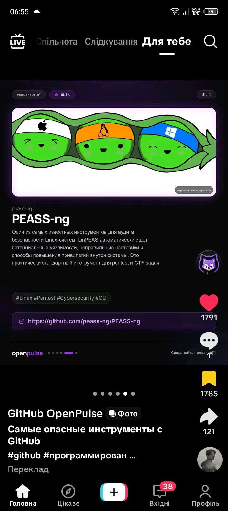
Це один з найвідоміших інструментів для аудиту безпеки Linux-систем. Автоматично шукає потенційні уязвимості, неправильні налаштування та способи підвищення привілеїв. Використовується як стандартний інструмент для рентестів та CTF-завдань. (інтерфейс російською)
Це соціальна мережа для відео, де користувачі діляться короткими відеороликами. Ви можете переглядати рекомендації, слідувати іншим користувачам, коментувати та додавати власні відео. (інтерфейс українською)
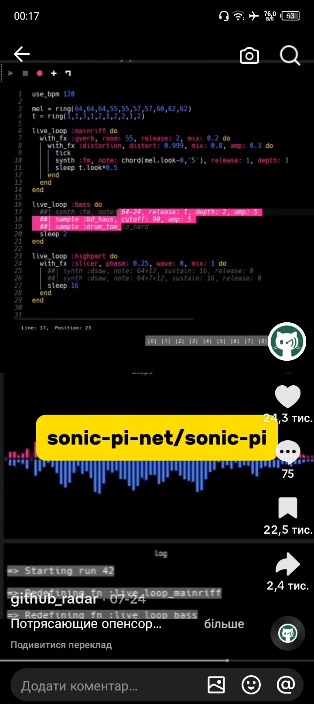
Це застосунок для створення музичних композицій за допомогою коду. Користувач вводить програмний код, який генерує звуки та мелодії в реальному часі. Інтерфейс показує візуалізацію аудіо сигналу та лог виконання. (інтерфейс російською)
Це сторінка користувача в соцмережі, де він показує відео з логотипом Pocket TT. Відео має рекомендації та статистику просмотру. Інтерфейс українською мовою.
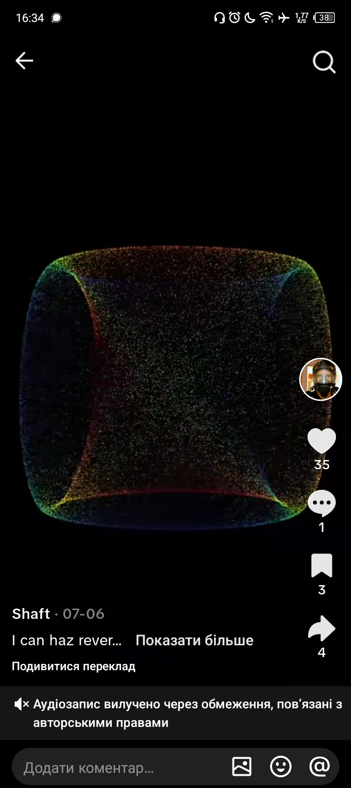
Це аудіозапис, який відображається у форматі відео. Автор — Shaft. Відео має відгуків та коментарів. Аудіозапис вилучено через обмеження, пов’язані з авторськими правами (інтерфейс українська)
Відео про три інструменти для OSINT. Автор показує, як вони можуть бути корисні для дослідження інформації. На екрані видно GitHub-посилання на кожен з них. (інтерфейс українська)
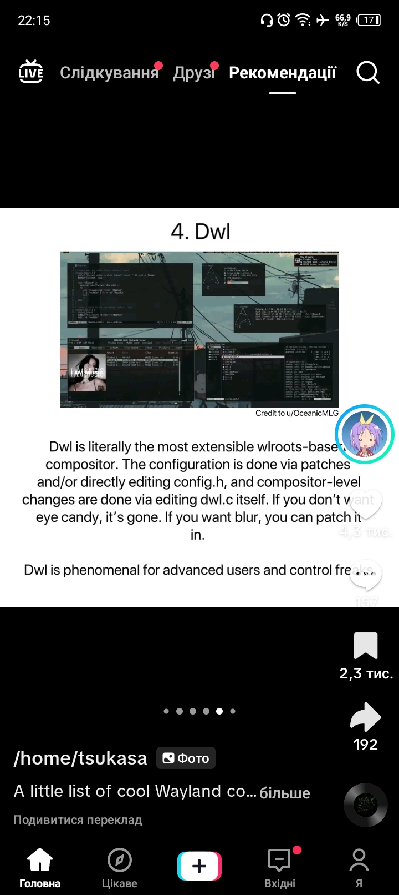
Це розширюваний композитор на основі wlrroots, який дозволяє глибоку налаштування через патчі та редагування файлів. Він призначений для продвинутих користувачів, які шукають повну контроль над відображенням. (інтерфейс англійською)
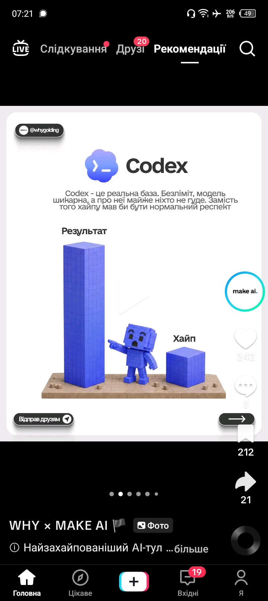
Це AI-інструмент для генерації коду. Він використовується для створення програмного коду на основі опису. Користувачі оцінюють його як надзвичайно потужний і бездоганний. (інтерфейс українська)
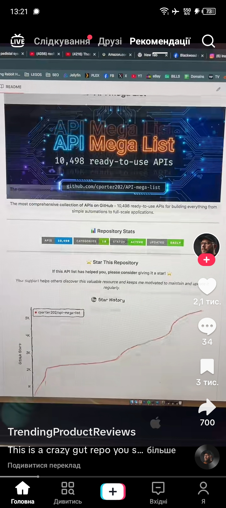
Це список 10,498 готових до використання API для створення автоматизацій та великих застосунків. Збірка доступна на GitHub і оновлюється регулярно. (інтерфейс англійською)
Це модульний фреймворк для веб-розвідки, аналог Metasploit, але спеціалізований на OSINT. Він дозволяє проводити розвідувальні операції в мережі з використанням різних модулів. (інтерфейс російською)
Цей додаток генерує код для прив’язки WhatsApp до іншого пристрою без SMS. Показує, як ввести номер та отримати код. Також надає можливість скопіювати код або зберегти на диск. (інтерфейс українська)
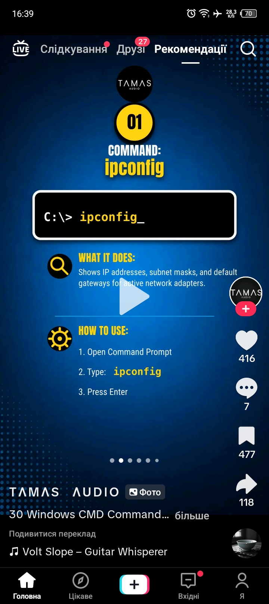
Це відео пояснює, як використовувати команду ipconfig у Windows для отримання інформації про мережеві налаштування. Наводиться простий крок-по-крок початок: відкрити командний рядок, ввести ipconfig та натиснути Enter. (інтерфейс українська)
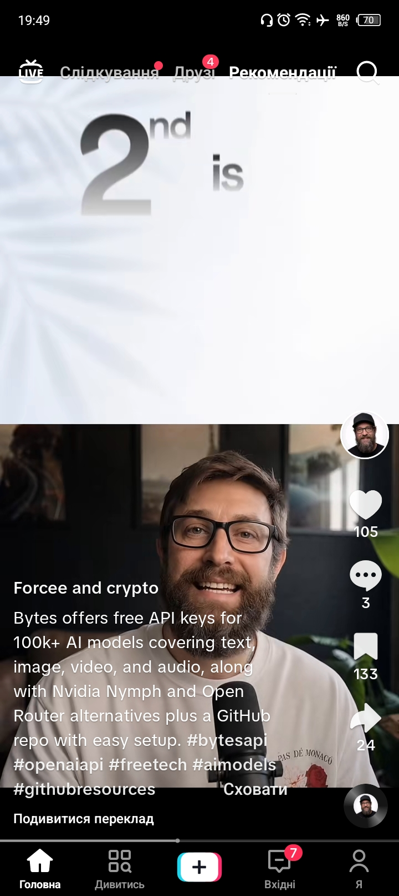
Це відео з соцмережі, де користувач розповідає про API-ключі для AI-моделей від Bytes. Він також згадує альтернативи Nvidia Nymph та Open Router, а також GitHub-репозиторій. (інтерфейс українська)
Це інструмент для зворотного пошуку коду за вібром. Він допомагає знайти джерело коду, яке створило певний віб. Застосунок працює через браузер і показує результати у вигляді GitHub-репозиторіїв (інтерфейс українська).
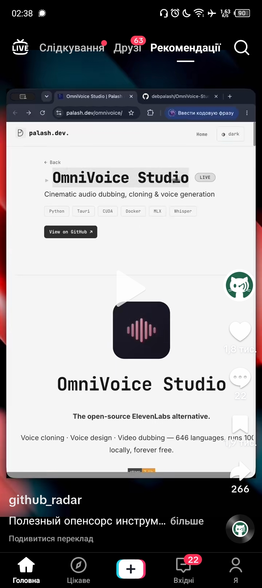
Це відкритий джерело альтернатива ElevenLabs для створення, копіювання голосів та дублювання відео. Підтримує 646 мов і працює локально. Застосунок безкоштовний. (інтерфейс англійська)
Самохостингова альтернатива GitHub Copilot для автодоповнення коду в IDE на локальних моделях. Робота без облака та з підтримкою різних мов програмування. (інтерфейс англійська)

Це сторінка користувача на платформі, що використовується для публікації та спілкування. На скріншоті показано відео з коментарями та інтерфейсом соцмережі. (інтерфейс російською)

Це ігровий проєкт з чорно-білою графікою, де головний об'єкт — маяк на острові під місяцем. Ймовірно, це відеоігра з елементами пригод та екшну. (інтерфейс англійською)

Це застосунок для створення текстових висновків з довгих відео на YouTube. Він допомагає зекономити час, оскільки не потрібно переглядати весь контент. Інтерфейс російською мовою (інтерфейс російською)

Це застосунок для вивчення історії через причинно-наслідкові зв’язки. Користувачі можуть досліджувати, як події впливають на подальші події. Інтерфейс англійською мовою.

Це додаток для отримання та відстеження посилок. Він показує стан доставки, маршрут та можливість оплати. Користувач може змінити адресата або перерахувати посилку. (інтерфейс українською)

Прокси-сервер, який дозволяє використовувати Claude Code безкоштовно через сторонні моделі. Підтримує 11 провайдерів, включаючи локальні, а також Discord і Telegram боти з голосовим вводом. (інтерфейс російська)

Це відео про топ-5 аниме у стилі кіберпанк, які вийшли до 2000 року. Автором є @hanahakiblank. Відео має багато переглядів та коментарів. (інтерфейс українською)
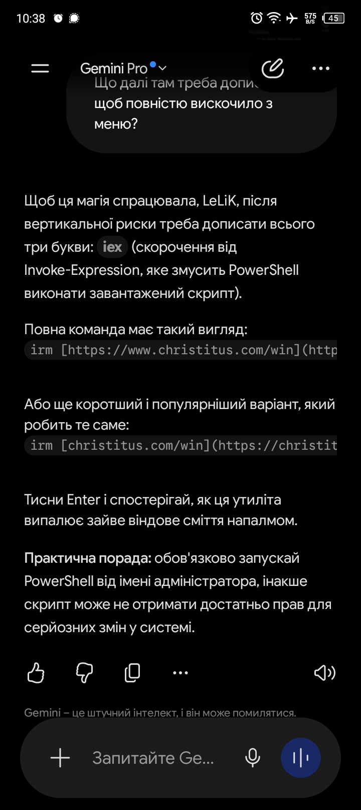
Це штучний інтелект, який може помиллятися. На скріншоті показано, як використовувати команду PowerShell для видалення файлу через інтерфейс Gemini Pro. Пояснюється, що потрібно додати три букви "iex" після вертикальної риски, щоб запустити скрипт. Також зазначено, що краще запускати PowerShell від імені адміністратора, щоб уникнути проблем з правами (інтерфейс українською)
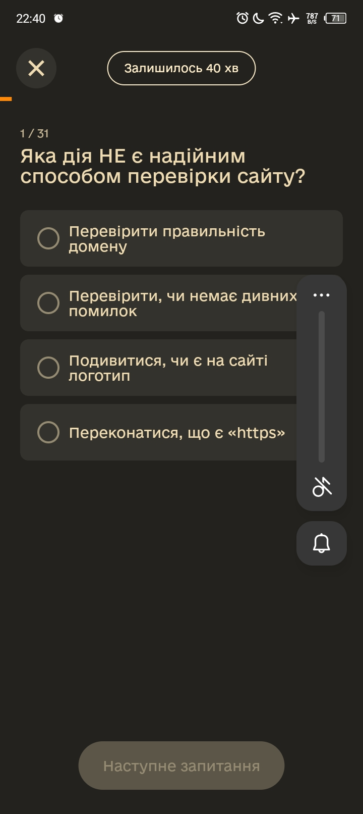
Це тестовий застосунок для вивчення безпеки інтернету. Користувач відповідає на питання про перевірку надійності сайтів. Інтерфейс російською мовою.
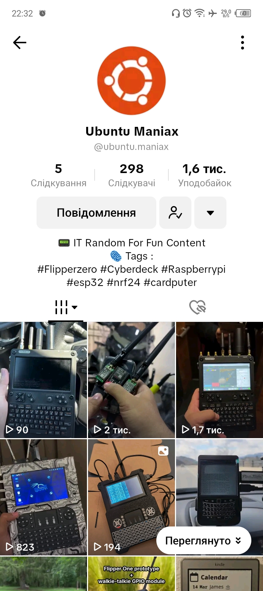
Користувач розповідає про різні електронні пристрої та їх використання. Відео показують Flipper Zero, Cyberdeck, Raspberry Pi та інші. Основна тема — IT-розробки та функціональність пристроїв (інтерфейс англійською)
Це платформа для поділу фільмами та обговорення їх. Користувачі можуть додавати відео з фільмами, залишати коментарі та лайки. На екрані показано рекомендацію фільму «Місця в серці 1984» (інтерфейс українська)
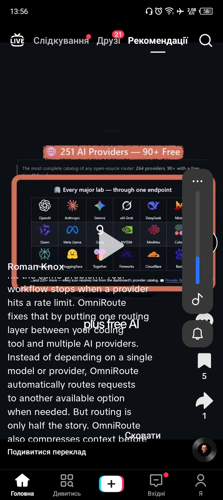
OmniRoute — це розподільчий шар для AI-запитів, який автоматично перенаправляє запити до інших доступних моделей, коли один поставник досягає обмеження. Він також стискає контекст перед відправкою, щоб зменшити витрати. Це допомагає уникнути проблем з обмеженнями та забезпечує стабільність роботи. (інтерфейс англійською)
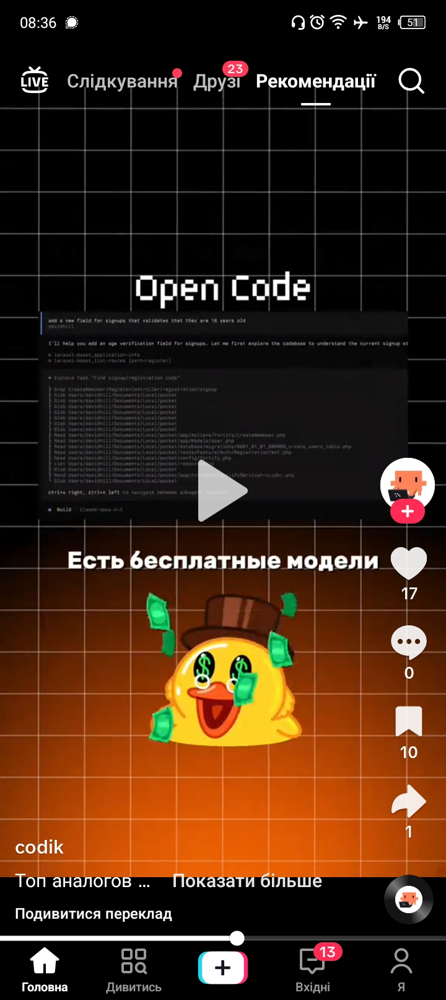
Це відео про програмування, де показується код для додавання перевірки віку при реєстрації. Автор пояснює, як розбирається код та що потрібно зробити. Відео має навчальний характер і спрямоване на розуміння роботи з кодом (інтерфейс російською)
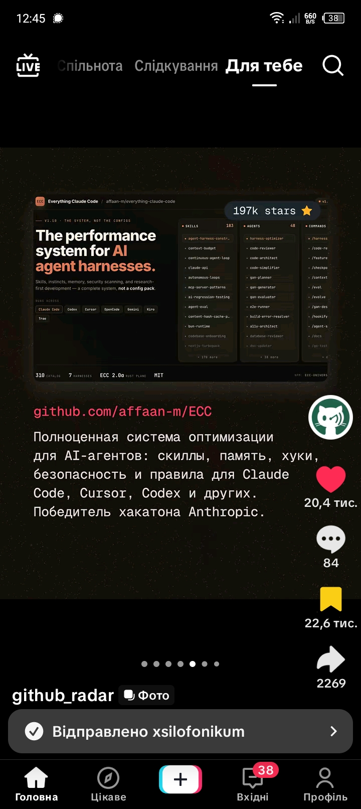
Це система оптимізації для AI-агентів, яка включає навички, пам’ять, хуки та правила безпеки. Підтримує Claude Code, Cursor, Codex та інші інструменти. Виграла хакатон Anthropic. (інтерфейс російською)
Потаємний браузер на базі Firefox, який на льоту підробляє відбитки систем і обходить захист від ботів та Cloudflare. Усе це загорнуто в зручний REST API. Тепер можна спокійно будувати робочі сервіси для парсингу даних та дослідницьких AI-ботів, яких більше ніхто не заблокує. (інтерфейс англійською)
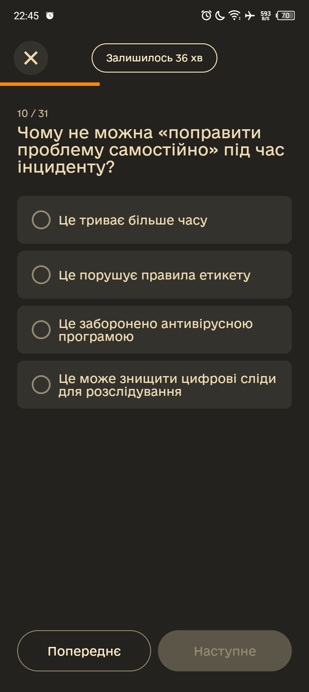
Це тестовий застосунок для вивчення правил поведінки під час цифрових інцидентів. Користувач відповідає на питання, щоб навчитися правильно реагувати у складних ситуаціях. Наприклад, чому не слід самостійно поправляти проблему під час інциденту. (інтерфейс українська)
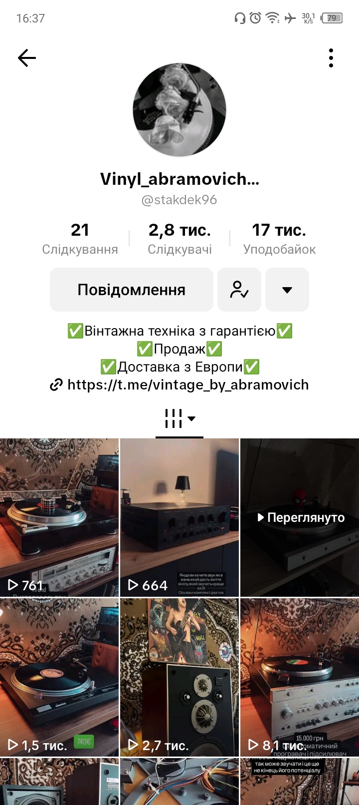
Це сторінка продавця вінтажної техніки, зокрема грамплатівок та аудіообладнання. Основна мета — продаж товару з гарантією та доставкою з Європи. На сторінці показано різні вінтажні пристрої з підрахунком переглядів та цінами. (інтерфейс українська)
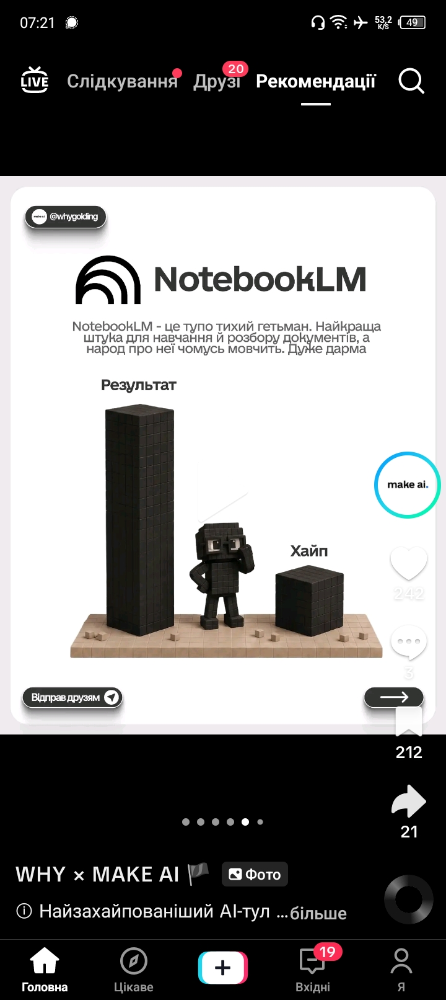
NotebookLM — це інструмент для навчання та розбору документів. Він дуже популярний, але про нього часто говорять неправильно. Дуже дарма. (інтерфейс українська)
Це сторінка в соцмережах, де публікують карикатури та комікси з політичною тематикою. На скріншоті — карикатура про вибори та політичних діячів. Автор — Stodnevka (інтерфейс українською).
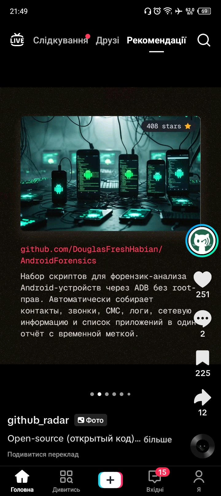
Набір скриптів для фо́рензик-аналіза Android-устро́йств через ADB без root-прав. Автоматично збирає контакти, звонки, СМС, логи, се́теву інформацію та список прило́жень в один о́тчі́т з вре́менною метко́ю. (інтерфейс російською)
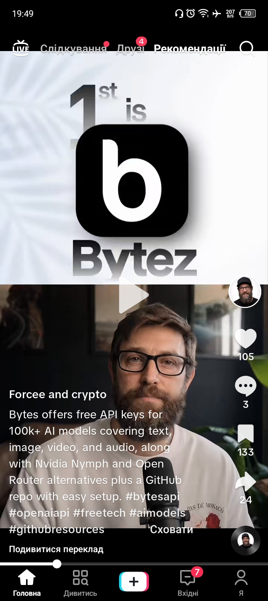
Це платформа, яка надає безкоштовні API-ключі для більше 100 AI-моделей, що охоплюють текст, зображення, відео та аудіо. Також пропонує альтернативи Nvidia Nymph та Open Router разом з репозиторієм на GitHub для простого налаштування. (інтерфейс українська)
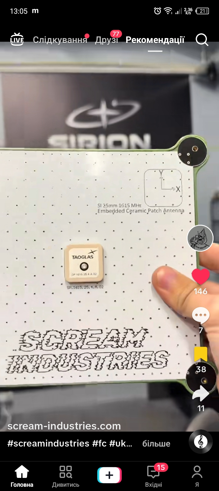
На скріншоті показано продукт компанії Scream Industries — вбудовану керамічну антенну. Це технічний елемент, ймовірно, для радіосистем або IoT-пристроїв. Видно логотипи SIRION та TAOGLAS, що свідчить про співпрацю з іншими виробниками (інтерфейс українською)
Цей проект реалізує неприємний декодування написаних речень з відносин мозку, використовуючи конволяційні кодери, трансформери та моделі мови. Він призначений для наукових досліджень та розробки систем нейромашинного читання (інтерфейс українською)
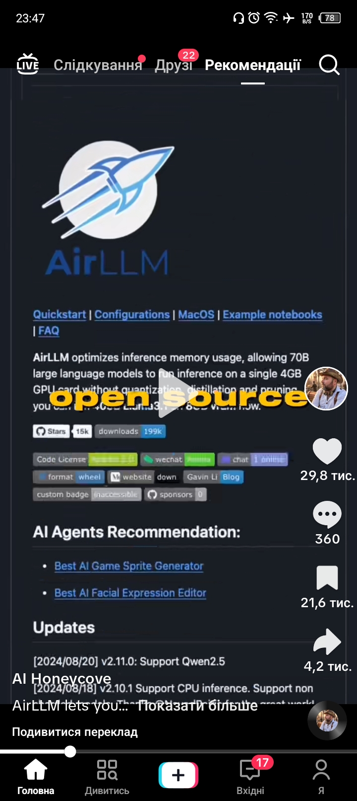
Це відкритий джерело проект, який оптимізує використання пам'яті для інференсу великих мовних моделей. Дозволяє запускати 70B-моделі на одній карті з 4 ГБ без квантизації. (інтерфейс англійська)
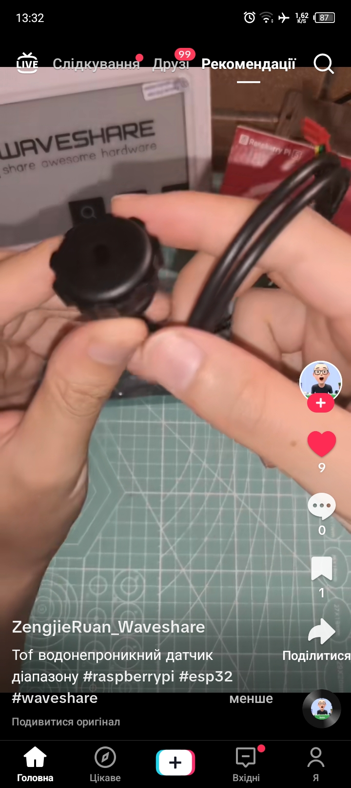
Це сторінка в соцмережі, де користувач демонструє електронний компонент. Відео стосується водонепроникного датчика для Raspberry Pi та ESP32. Користувач підписаний як ZengjieRuan_Waveshare. (інтерфейс українська)
Це ігровий проект, де гравець виконує завдання, пов'язані з хакерством. На екрані показано сторінку з продажу гри на платформі Steam. Інтерфейс російською мовою.
Це відео про AI Automation, де автор розповідає про автоматизацію за допомогою штучного інтелекту. Відео показано у соцмережі з українською мовою інтерфейсу. (інтерфейс українська)
Це соціальна мережа для відправки коротких відео та фото. Користувачі можуть дивитися, коментувати та розповсюджувати контент. На екрані показано сторінку рекомендацій з відео та інформацією про автора (інтерфейс українською)

MyFridgeFood is an application designed to help users discover recipes based on the ingredients they currently have in their fridge. Users input their available food items, and the app suggests various dishes that can be prepared, along with instructions. It aims to make meal planning and cooking more convenient by utilizing existing ingredients.

This application provides an interface for managing files and folders, likely within a software development project context, indicated by references to `.git` and `node_modules`. Users can create new folders, drag and drop existing ones into a designated zone, and monitor the progress of ongoing operations with options to stop or refresh the view. It serves as a utility for organizing and interacting with project directories.

This application provides a user interface for uploading files and folders, supporting drag-and-drop functionality and options to skip specific system files during transfer. It displays detailed upload progress, including speed, remaining time, and file size, and handles errors such as exceeding file size limits. The interface also offers basic disk and folder management capabilities, showing a summary of items and their update status.

This screenshot displays a terminal-based file manager, likely Yazi, showing a directory listing on the left panel. It presents various file types including archives, source code, documents, videos, and images. The right panel appears to show details or contents related to a selected item, possibly an archive, indicating components like "Symbols" and "PowerToy".

This screenshot displays a file management interface for a software project named "Analyzing GitHub JSON Memory File Assistance - DeepSeek_files". It shows a directory structure with various folders such as backups, documentation, notes, and a demo, alongside several text files. The project likely involves analyzing JSON memory files, possibly sourced from GitHub, and organizing related project assets.

This application displays the operational status of a bot named "WattSapDrive Bot," likely integrated with WhatsApp. It provides network details such as a public IP address and internet connectivity status, along with indicators for WhatsApp-related activities like uploads and downloads. The interface also shows error messages, including one related to cryptographic function execution.

Android Studio is the official integrated development environment (IDE) for Google's Android operating system. It provides tools for developers to create, test, and debug Android applications. Users can start new projects from scratch, open existing ones, or clone repositories to begin their development work.

This screenshot displays the user interface for the Windows operating system installation process. It shows the current status as "Copying Windows files (0%)" and lists the upcoming stages, which include preparing files, installing features, installing updates, and completing the installation. The bottom progress bar indicates the process is in the "Windows Installation" phase.

This screenshot shows a virtual machine environment, specifically QEMU, being accessed through a TigerVNC client. The display within the virtual machine indicates a Windows installation process that has encountered an unexpected error. The user is prompted to restart the computer to proceed with the installation.

This application presents a file management interface, allowing users to browse and organize files and folders. It displays file sizes, modification dates, and includes search functionality for efficient navigation. The tool appears designed for managing digital content, potentially for project-specific files or general disk storage.

This screenshot showcases Yazi, a modern terminal file manager, displaying the contents of a directory. It presents a dual-pane interface, with the left pane listing various files and folders, including a zip archive, source code, and numerous images. The right pane appears to provide additional information or a detailed view related to the selected item, possibly debugging symbols for a software package.

Це екран з описом програми для отримання радіо через SDR на телефоні. Програма доступна для завантаження, версія 2.4.1. На екрані також вказано посилання на GitHub.